Precision timing from a compact, radiation-hard calorimeter
An electron test beam from 25 to 150 GeV, analysed end-to-end from raw
DRS4 waveforms to energy- and timing-resolution results — built to make a clear,
reproducible, world-class case.
★ Headline result
The MCP-free (DW−UP)/2 estimator on the brightest-1000 events reaches
25.7 ± 0.6 ps at 150 GeV (DSB1 build, srCFD), with ≈50 ps
(50.5 ps) across the full timing fiducial beside it. It is robust by construction: the corner
difference cancels the per-group timing reference (≈73 ps inter-group jitter), the DRS4 cell-width
error, and the position walk alike.
The brightest-1000 selection is deterministic —
the 1000 largest-ΣLG fiducial events at each energy, fixed before any fit — so there is no trained bin
choice and no optimization bias by construction (0.7% of fiducial events at 150 GeV,
3.4% at 25 GeV; selection-systematic ±1.0 ps from K/r/veto variations).
Timing uses the per-regime estimator rule: srCFD (the 5% leading edge, recovered from
the LG channel when the HG pulse clips) for the high-light builds, LED for the dim
builds. The σt-vs-E curves for all four builds are in Layer 5.
High-energy limit
Fitting σt = a/√E ⊕ b to the production curve gives a = 203 ± 6 ps·√GeV and an asymptotic
timing floor of 18.8 ± 0.8 ps — consistent with, and confirming, the
published 17.5 ps constant term of arXiv:2401.01747 (NIM A 1068 (2024) 169737). The floor is an
extrapolation beyond the data: our lowest measured point is 25.7 ps at 150 GeV.
Its plausible physical origin is longitudinal shower-depth fluctuation — timing shifts by
-33.6 ± 2.9 ps per e-fold of collected light (the "depth dial", Layer 5) — not a DAQ artefact.
Production results at a glance — all four builds
Build (WLS capillary)
Estimator
σt at 150 GeV (brightest-1000)
Floor b (ps)
DSB1 (organic DSB1)
srCFD
25.7 ± 0.6 ps (≈50 ps full fiducial)
18.8 ± 0.8
TENERGY (DSB1, E-type geometry)
LED
30.3 ps
26.0 ± 1.8
MIXED (DSB1 + LuAG:Ce)
srCFD
39.6 ps (module-wide, reference only)
34.3 ± 2.4
LUAG (LuAG:Ce ceramic)
LED
44.4 ps
24.6 ± 3.3
LYSO:Ce scintillator and W absorber are common to all four
builds — the WLS capillary is the variable. The MIXED module-wide number is reference-only (its
two WLS species make a single module-wide σ ill-posed); the like-for-like comparison is the same-shower
ratio, σ(DSB1-pair)/σ(LuAG-pair) = 1.04 ± 0.05 within one shower. Beam & instrument context:
inter-group reference jitter ≈73 ps (cancelled by the estimator), hadronic punch-through 6.2%
at 150 GeV (removed by the containment cut), shower containment 95–97% across
energies in the timing fiducial.
The story below follows the evidence from the instrument up to the physics —
channel fidelity, then data integrity, then beam & selection, then calibration
& corrections, and finally the energy and timing resolution with their systematics.
Each beat states its takeaway; navigate with the sidebar.
Every number quoted in this report is harvested directly from the analysis
outputs (output/Summary/results.json, produced by
harvestResults.C) — none are typed by hand, so the text cannot
drift from the figures beside it. Headline chain: brightest-1000
(DW−UP)/2, srCFD/LED per regime (analyze/studies/timingProduction.C,
verified at run time against the gated table of 2026-06-09).
Report generated 2026-07-21.
Layer 1 -- Hardware Integrity
Before any physics, one question: is the instrument sound? RADiCAL is a W/LYSO shashlik prototype read out by eight high-gain capillaries (fast → timing) and eight low-gain capillaries (slow → energy) on a DRS4 digitiser; the May 2023 CERN-SPS H2 run took electrons at 25–150 GeV. We walk the readout from the ground up — are the channels alive, are the pulses clean, can we trust the clock, is the response linear — so every number in the layers that follow rests on a verified detector.
Are all eight channels alive — and quiet?
Pedestal noise (baseline RMS) of each capillary against the 5 mV noise floor, with every channel's active fraction.
★ Key FindingYes — all eight capillaries are live and quiet. Pedestal RMS ≈ 1.3 mV, far below the 5 mV floor; the active fraction stays high on every channel (>94% even for the weakest); saturation is negligible. NW-Up carries the weakest signal of the eight but is fully functional — flagged here and explained later by light yield, not a dead channel.
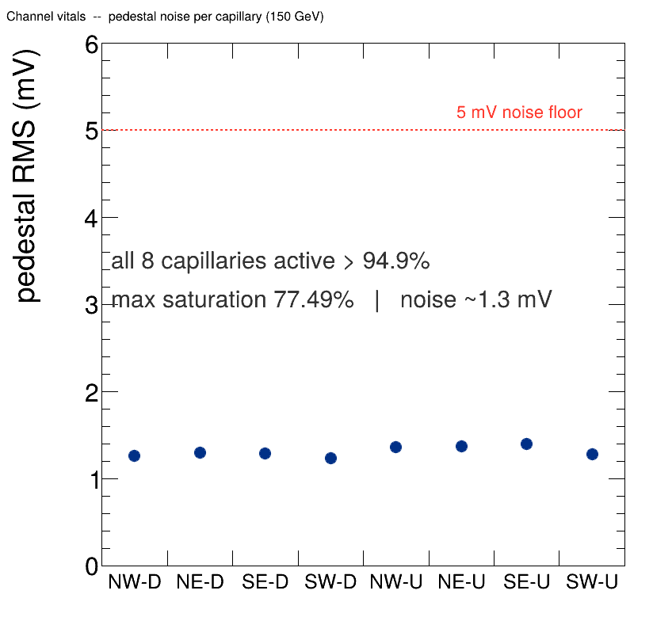
Pedestal noise per capillary — all 8 well under the 5 mV floor, fully active, negligible saturation.
They fire — but are the pulses clean and consistent?
Average pulse shape of all 16 readout channels at 150 GeV (normalised): the fast high-gain capillaries (timing) and the slow low-gain capillaries (energy).
★ Key FindingEvery channel produces a clean, consistent pulse. The HG chain is fast (a sharp prompt peak in the first ≈18 ns — good for timing); the LG chain is AC-coupled, so each pulse is followed by a balancing undershoot (≈35%) that recovers to baseline by ≈500 ns with no ringing — stable baseline restoration across the whole module.
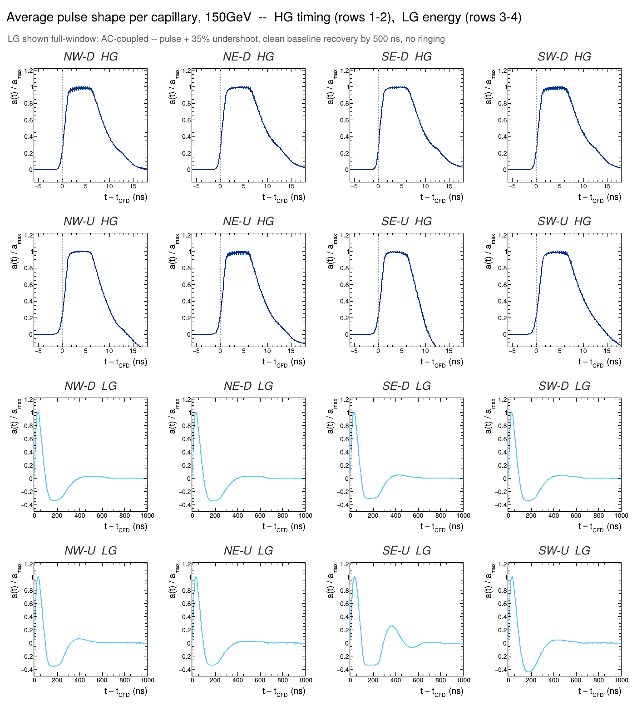
Average pulse shape, all 16 channels (150 GeV): 8 HG (top, fast → timing) + 8 LG (bottom, slow → energy). Clean and consistent.
The pulses are clean — but can we trust the clock to picoseconds?
The DRS4 samples on 1024 capacitors with a rotating start (“stop”) cell. This is the stop-cell coverage against the ideal uniform diagonal.
★ Key FindingYes — the time base is sound, and its residual is corrected. The stop cell rotates uniformly (every physical cell is sampled equally → a data-driven correction is well-posed). The per-cell width calibration was not applied (nominal 0.2 ns/cell), but that uncalibrated width is common-mode and cancels exactly in the (DW−UP)/2 corner estimator — so it does not limit the headline. The residual stop-cell pattern is corrected and validated out-of-sample on the MCP-referenced combination (A²-combo 120.7 → 99.5 ps, split-half).
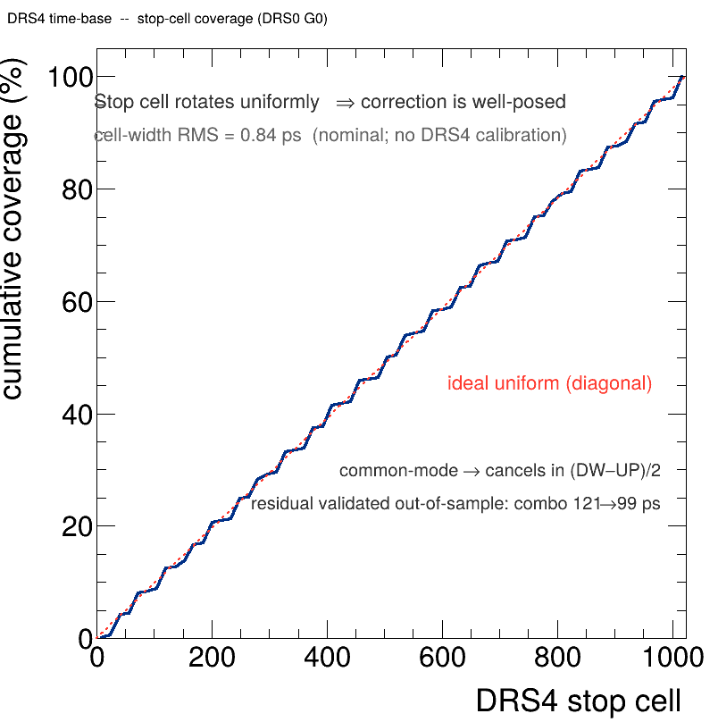
DRS4 stop-cell coverage hugs the ideal uniform diagonal — the stop cell rotates uniformly, so the data-driven correction is well-posed.
Timing is sound — is the energy response linear?
Mean signal amplitude vs beam energy for each of the eight capillaries, 25–150 GeV.
★ Key FindingYes — the response is linear and the channels track together. All eight capillaries scale with energy in lock-step. The high-gain chain compresses near its rail above ~50 GeV — by design, since energy is measured on the linear low-gain channels — and the low-gain chain (right) stays straight across the full 25–150 GeV range, hugging the proportional y ∝ E reference. That is the chain energy is actually read out on, so the linearity that matters is confirmed. No channel gains anomalously less per GeV. The instrument is verified; on to the timing reference.
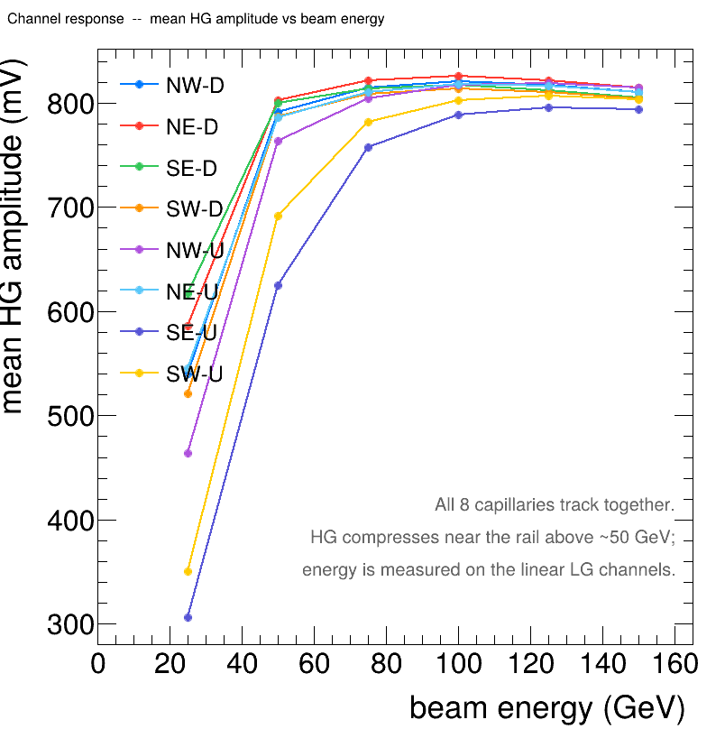
High gain. Mean HG amplitude vs energy — all 8 capillaries track together but compress near the rail above ~50 GeV. Expected: HG is the timing chain, not the energy chain." loading="lazy">High gain. Mean HG amplitude vs energy — all 8 capillaries track together but compress near the rail above ~50 GeV. Expected: HG is the timing chain, not the energy chain.
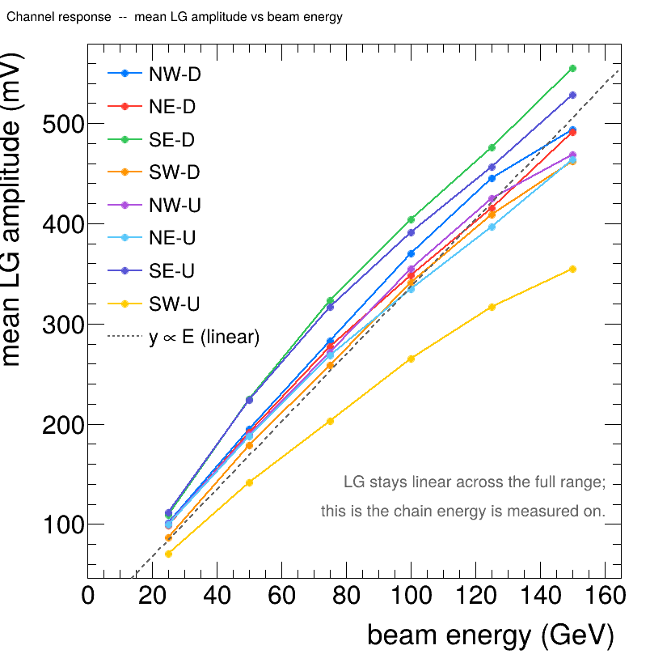
Low gain. Mean LG amplitude vs energy — linear across the full range (dashed line is y ∝ E). This is the chain energy is measured on, and it stays proportional with no saturation." loading="lazy">Low gain. Mean LG amplitude vs energy — linear across the full range (dashed line is y ∝ E). This is the chain energy is measured on, and it stays proportional with no saturation.
How do we know the time base is sound? (the full study)
The DT5742 was read with a nominal time axis (0.200 ns/cell), so the only DRS4 timing artefact that can matter is the fixed per-cell width error. Two facts settle whether it touches the headline: the stop cell rotates uniformly (left), so a data-driven correction is well-posed; and a split-half out-of-sample test (right, trained on even events, tested on odd) shows that correction helps only the MCP-referenced combination, while the (DW−UP)/2 corner is already immune. The full per-group cell-width spectra and correction-pattern fits are in the Layer-1 appendix. Generated by drs4TimeBase.C.
★ Key FindingThe DRS4 cell-width error is real (~68 ps, common-mode across DRS0-G0 channels) but CANCELS in the (DW-UP)/2 corner estimator (same group, same crossing cell) and in MCP1-MCP2 -- so the production headline is immune to it, and the 73 ps inter-group reference jitter is genuine. It DOES limit the MCP-referenced combination methods (mean-all, A^2-weighted-all): split-half out-of-sample validation shows the A^2 combo improving 120.7 -> 99.5 ps after correction. Applied to M2/M3 in timingResolution.C; activates on reprocess.
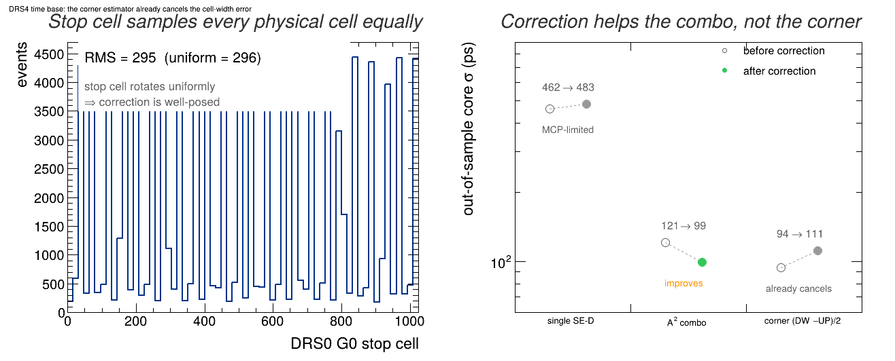
Left: the DRS0 G0 stop cell samples every physical cell equally (RMS 295 vs 296 for a perfectly uniform rotation), so the stop-cell correction is well-posed. Right: out-of-sample core σ before/after the correction — the A² combo improves (120.7→99.5 ps) because it carries the HG-to-MCP cell gap, while the corner (DW−UP)/2 estimator already cancels the cell-width error (correction adds nothing) and the single channel is MCP-jitter-limited." loading="lazy">Left: the DRS0 G0 stop cell samples every physical cell equally (RMS 295 vs 296 for a perfectly uniform rotation), so the stop-cell correction is well-posed. Right: out-of-sample core σ before/after the correction — the A² combo improves (120.7→99.5 ps) because it carries the HG-to-MCP cell gap, while the corner (DW−UP)/2 estimator already cancels the cell-width error (correction adds nothing) and the single channel is MCP-jitter-limited.
Does the digitiser stay clean across all six energies?
The DRS4 noise floor (pedestal RMS) for all eight channels across the full 25–150 GeV scan, against the 5 mV threshold; saturation and spike rates (both flat at zero) are stated. Distilled by layer1Summary.C from drs4Diagnostics.C.
★ Key FindingYes — the DRS4 stays clean at every energy. The noise floor is flat at ~1.3 mV across all channels and all six energies, far below the 5 mV threshold; HG saturation is <0.1% even at 150 GeV (energy is read on the unsaturated low-gain chain); the worst spike rate is ~0.2%. No channel degrades with beam rate or energy.
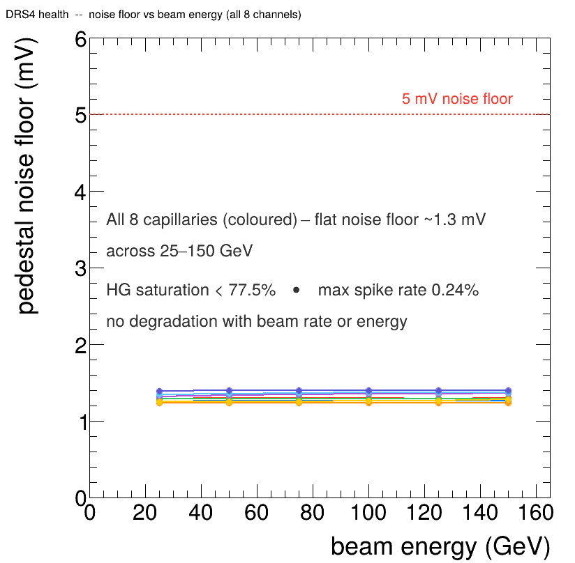
DRS4 noise floor vs beam energy, all 8 capillaries — flat at ~1.3 mV, well under the 5 mV threshold, with saturation and spikes negligible at every energy.
Are the channels independent — or is there cross-talk?
If two channels shared an electronic path, their pulse amplitudes would track each other event-by-event. The 8×8 matrix below is the Pearson correlation ρ of every high-gain channel pair at 150 GeV — the single cleanest test of whether the channels are independent. Generated by channelIntegrity.C.
★ Key FindingThe channels are independent — the correlations are physics, not electronics. Every pair is strongly correlated (ρ = 0.86–1.00) because one EM shower lights the whole capillary bundle at once — common-mode shower sharing, not cross-talk. The tell: the least-correlated channel is SE-D (the geometric outlier), exactly as shower geometry predicts; and subtracting a neighbour makes the per-sample residual noise worse, not better, which rules out a shared electronic path.
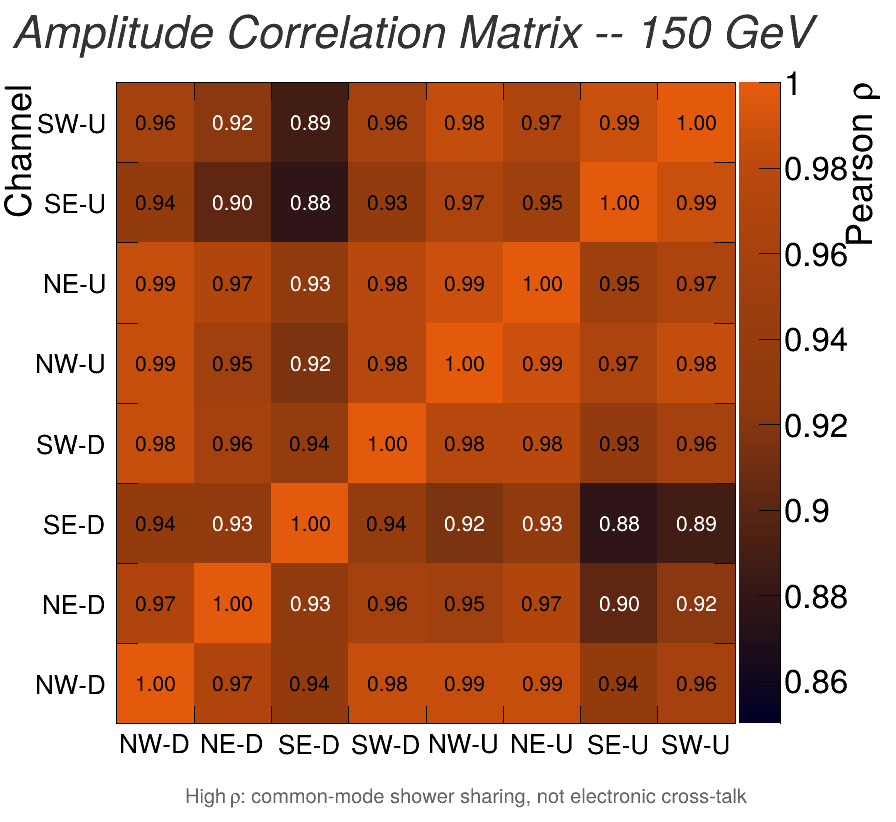
Inter-channel amplitude correlation matrix at 150 GeV (Pearson ρ). Warm/light = strongly correlated; dark = the weakly-correlated SE-D outlier.
Do the pulse shapes hold up across all six energies?
A clean time base is necessary but not sufficient — the pulse shape itself must stay invariant as the energy climbs, or the CFD timing point would walk. Each panel below overlays all six beam energies for one HG capillary (mean ± RMS band, 5000 DRS4 waveforms each), aligned on that channel's CFD-20% crossing (t = 0, dashed red). Produced by averageWaveforms.C reading the raw pulse TTrees directly — waveforms are not stored in the compact ntuple.
★ Key FindingThe pulse shape is energy-invariant. All eight HG capillaries produce well-formed negative-going pulses whose shape is fixed across 25–150 GeV — only the amplitude grows with energy. That is exactly what a stable CFD timing point requires. SE-U's lower amplitude is a reduced light yield (WLS-fibre coupling), not a distorted waveform — its shape matches the others.
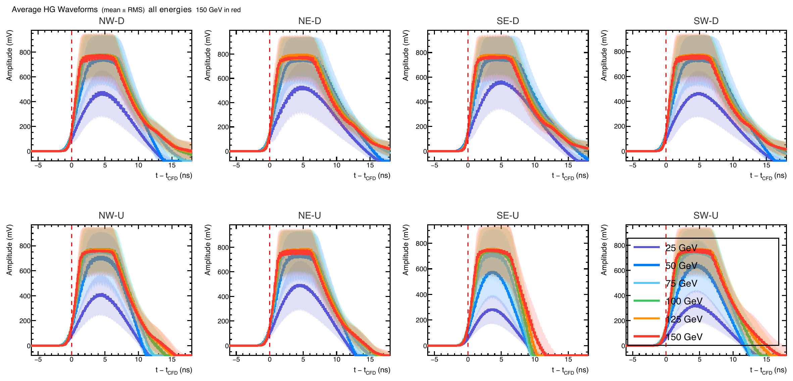
All six beam energies overlaid per HG capillary (4×2). Colours: violet = 25 GeV → red = 150 GeV. The pulse shape is energy-invariant; only the amplitude scales. SE-U sits visibly low — the same channel flagged elsewhere.
Is the response uniform across the beam spot?
Energy-invariant shape still leaves one question: does each capillary respond the same regardless of where in the beam spot the particle lands? Two views answer it — the mean HG amplitude versus beam energy per channel (left), and the HG/LG amplitude-ratio maps across the impact position at 150 GeV (right, inverted-kRust COLZ, binned at the canonical 1 mm WC resolution). Events satisfy the full timing selection (MCP quality, energy fiducial r < 2 mm). Produced by chargeProfiles.C.
★ Key FindingThe response is position-independent within the fiducial. The HG/LG ratio is flat across the beam spot for every capillary — no geometric shadow, hot, or dead region. The amplitude-vs-energy curves confirm all eight scale together, with SE-U and SW-U running ~10–15% low (longer upstream WLS-fibre path) and a gentle high-energy roll-off as the high-gain stage saturates — which is exactly why the energy measurement is anchored on the low-gain channels.
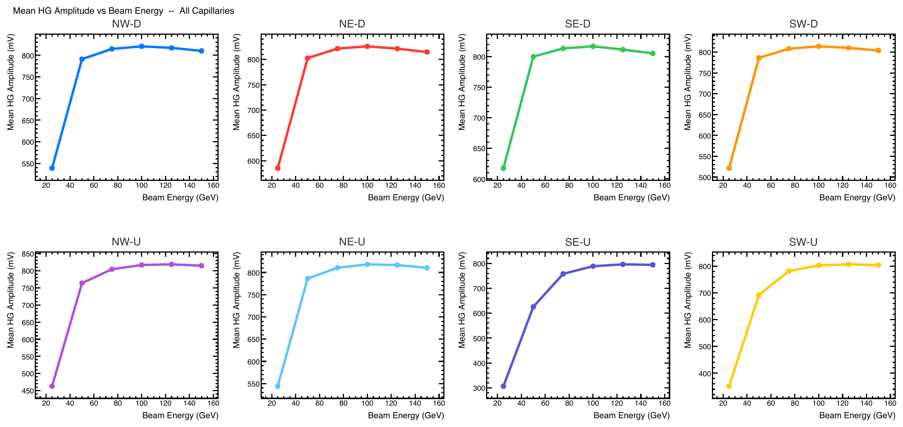
Mean HG amplitude vs beam energy, one panel per capillary. All eight scale smoothly; SE-U and SW-U gain less per GeV (reduced light yield), and every channel softens above ~100 GeV as the high-gain stage approaches saturation.
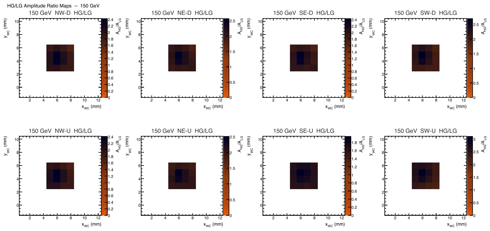
1 mm wire-chamber resolution (kWC_resBin) — the same bins as the beam and HG hit-maps. The lit patch is only ~4 mm wide because of the 2 mm energy fiducial, and the delay-line wire chamber localises a track to just ~3.6 mm (σx≈3.7, σy≈3.6 mm), so these 1 mm bins already oversample the tracker ~3× — finer binning would alias noise, not reveal structure. A flat ratio across the spot means consistent HG/LG gain matching; real structure would flag a fibre or SiPM coupling problem." loading="lazy">HG/LG amplitude-ratio maps at 150 GeV, binned at the canonical 1 mm wire-chamber resolution (kWC_resBin) — the same bins as the beam and HG hit-maps. The lit patch is only ~4 mm wide because of the 2 mm energy fiducial, and the delay-line wire chamber localises a track to just ~3.6 mm (σx≈3.7, σy≈3.6 mm), so these 1 mm bins already oversample the tracker ~3× — finer binning would alias noise, not reveal structure. A flat ratio across the spot means consistent HG/LG gain matching; real structure would flag a fibre or SiPM coupling problem.
The full per-energy record — anything we missed?
Behind every chapter above sits a full ten-panel quality dossier for each of the six beam energies — beam hit map, MCP amplitudes, per-channel HG/LG, time-walk, TOT & LED, cut-optimisation scans, fiducial overview, and Pb-glass containment (60 panels in all, generated by qualityPlots.C). Rather than reprint all of them, here is the single overview page at the headline energy; the complete set ships with the data release.
★ Key FindingNothing. The 150 GeV overview is representative of all six energies — a clean, well-centred beam spot inside the fiducial, symmetric x/y profiles, both MCP references in range with only ~1.3% saturation, and 9.4% of events surviving the 3 mm fiducial. Every energy tells the same story (live channels, clean pulses, sound time base, linear response) with no energy-specific pathology. The hardware is verified end to end; on to the timing reference.
Headline-energy (150 GeV) quality overview: beam hit map with fiducial circles, x/y impact profiles, MCP1/MCP2 amplitude spectra, and run statistics. The occupancy maps are binned at 2 mm — an integer multiple of the ~0.4 mm wire-chamber delay-line TDC quantum — so the position quantisation averages out instead of aliasing into the moiré “comb” that 1 mm bins produce; 2 mm still oversamples the ~3.6 mm WC resolution. Representative of the full six-energy, ten-panel dossier set.
Full Layer 1 diagnostics -- DRS4 time-base study, raw pages (click to expand)
DRS4 time-base verification -- raw diagnostic pages
★ Key FindingThese are the raw pages behind the hero above. The verdict is unchanged: cell widths are nominal, the stop cell rotates uniformly, and only the MCP-referenced combination benefits from the correction -- the corner estimator that sets the headline already cancels the cell-width error.
p.1
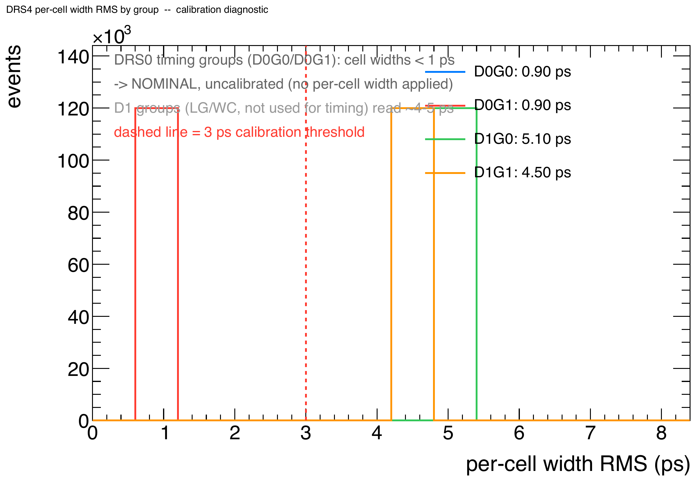
Per-cell width RMS by readout group. The DRS0 timing groups (D0G0/D0G1) read <1 ps -- nominal, no per-cell width calibration applied; the D1 groups (LG/wire-chambers, not used for precision timing) read ~4-5 ps. Dashed line = 3 ps calibration threshold.
p.2
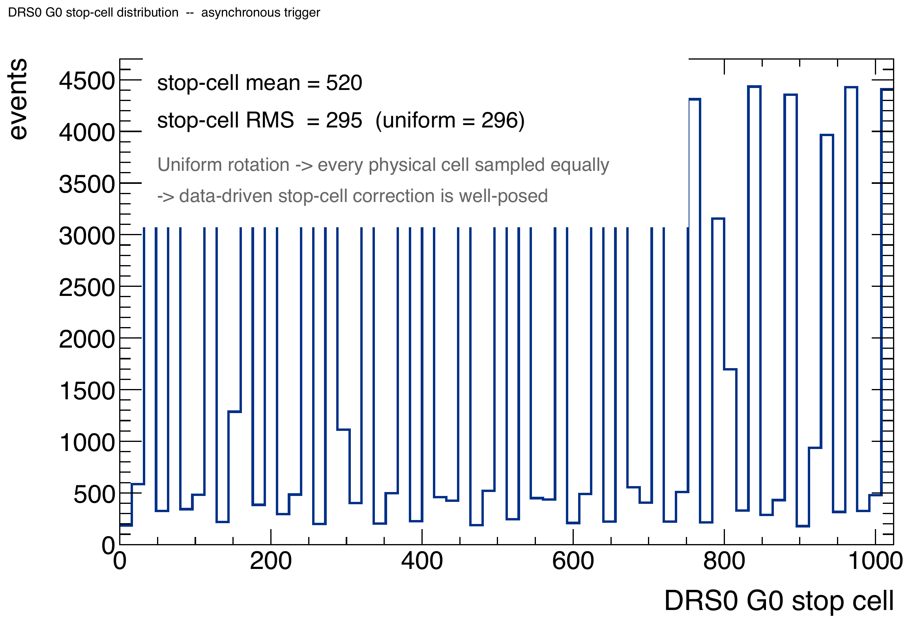
DRS0 G0 stop-cell distribution under the asynchronous trigger. RMS 295 vs 296 for a perfectly uniform rotation -- every physical cell is sampled equally, so the data-driven stop-cell correction is well-posed.
p.3
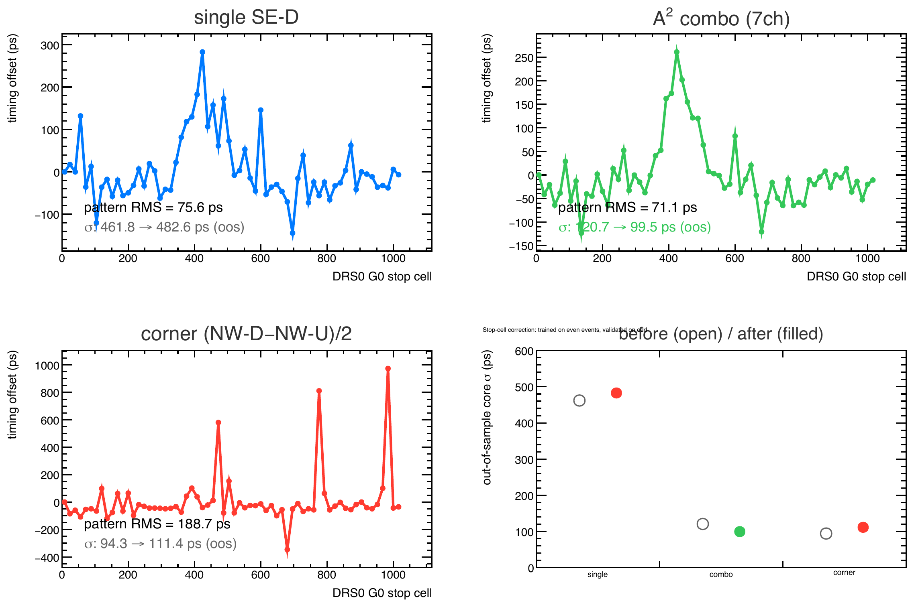
Stop-cell correction patterns (offset vs stop cell) for the single channel, the A² combo, and the corner estimator, with the out-of-sample core σ before/after each. The corner shows a fixed pattern that cancels in the difference; the combo carries the HG-to-MCP cell gap and improves once corrected.
Layer 2 -- Reference Characterization
Status: COMPLETE -- timing reference characterized. All capillary timing measurements are made relative to the MCP timestamp (hg_cfd[i] = t_capillary -- t_MCP). Understanding the MCP's own timing jitter is essential: it sets a noise floor for per-channel measurements but cancels exactly in the (DW--UP)/2 combination, which is why that estimator achieves sub-MCP resolution.
Reference characterization at a glance
The two “MCPs” are one MCP passively split into the two DT5742 readout groups (verified: amplitude correlation = 1.000), so each group has its own copy of the same time reference. Expand the panel below for the full per-channel and per-energy detail.
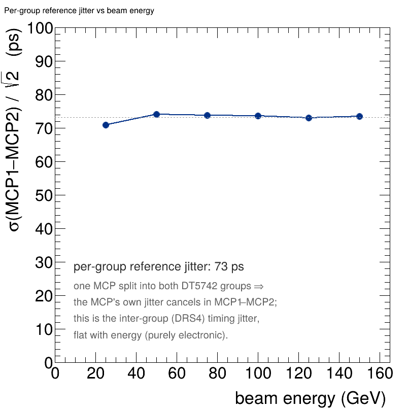
own jitter cancels in the difference — what remains is the inter-group (mezzanine-to-mezzanine) DRS4 timing jitter, i.e. the penalty for referencing a channel across groups. Per-group referencing avoids it for same-group channels." loading="lazy">σ(MCP1−MCP2)/√2 ≈ 73 ps, flat with energy. Because MCP1 and MCP2 are the same signal split into the two groups, the MCP's own jitter cancels in the difference — what remains is the inter-group (mezzanine-to-mezzanine) DRS4 timing jitter, i.e. the penalty for referencing a channel across groups. Per-group referencing avoids it for same-group channels.
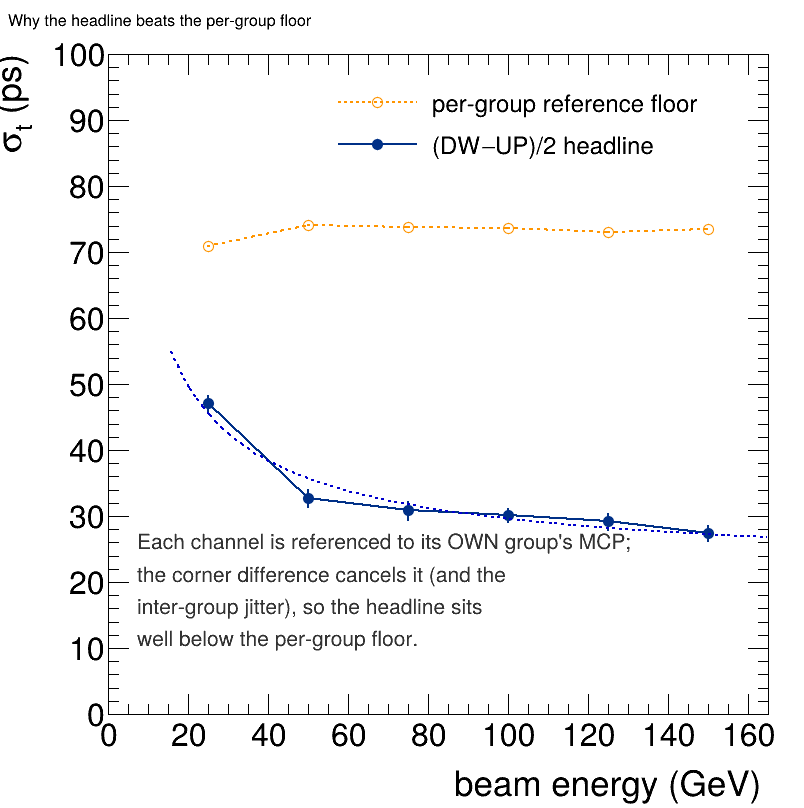
below the ≈73 ps per-group floor. Each channel is referenced to its own group's MCP copy, and the corner difference cancels that reference algebraically — removing both the MCP jitter and the inter-group jitter. The three corners kept within group 0 (NW, NE, SE) are exactly reference-free; only SW-U sits in group 1, so the SW corner carries a sub-dominant inter-group residual. That is why the headline beats the floor." loading="lazy">The (DW−UP)/2 production headline (25.7–45 ps, brightest-1000, srCFD) sits below the ≈73 ps per-group floor. Each channel is referenced to its own group's MCP copy, and the corner difference cancels that reference algebraically — removing both the MCP jitter and the inter-group jitter. The three corners kept within group 0 (NW, NE, SE) are exactly reference-free; only SW-U sits in group 1, so the SW corner carries a sub-dominant inter-group residual. That is why the headline beats the floor.
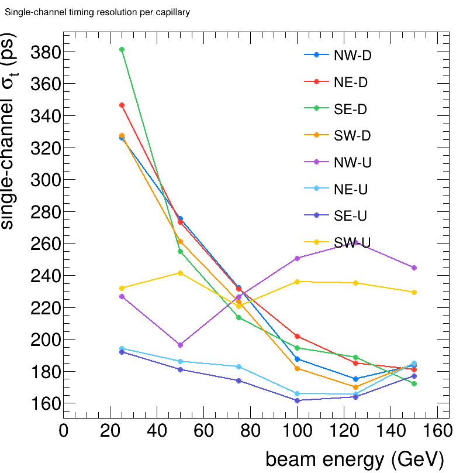
Down capillaries are light-limited and fall steeply with energy (more light → faster edge → better timing); two Up capillaries break the trend. NW-U is the consistently weakest channel — its compressed, low-light HG pulse gains little extra slew once all channels approach the rail above ~50 GeV, so it stops improving and drifts slightly worse at high E. SW-U is the lone capillary read out in DRS0 Group 1 and referenced to MCP2 (all others use MCP1 in Group 0), with weak relative gain (≈0.74), so its single-channel σ sits flat on the energy-independent reference floor (σMCP ≈ 70 ps, measured flat across all energies). Timing low on the edge already removes the broad high-fraction shoulder on the Down capillaries; the corner difference (which cancels the reference), the brightest-1000 selection, and the srCFD estimator (Layers 4–5) then reach the 25.7 ps headline." loading="lazy">Single-channel CFD-5% timing per capillary (MCP-referenced) is ≈180–300 ps, noise- and reference-jitter-dominated. The four Down capillaries are light-limited and fall steeply with energy (more light → faster edge → better timing); two Up capillaries break the trend. NW-U is the consistently weakest channel — its compressed, low-light HG pulse gains little extra slew once all channels approach the rail above ~50 GeV, so it stops improving and drifts slightly worse at high E. SW-U is the lone capillary read out in DRS0 Group 1 and referenced to MCP2 (all others use MCP1 in Group 0), with weak relative gain (≈0.74), so its single-channel σ sits flat on the energy-independent reference floor (σMCP ≈ 70 ps, measured flat across all energies). Timing low on the edge already removes the broad high-fraction shoulder on the Down capillaries; the corner difference (which cancels the reference), the brightest-1000 selection, and the srCFD estimator (Layers 4–5) then reach the 25.7 ps headline.
Which capillary limits the timing — and is it the same one at every energy?
The per-channel jitter above is a single number; this map breaks it open. Every cell is the single-channel CFD-5% σt (ps) for one capillary at one energy — eight rows × six energies, the whole reference-limited landscape on one page (inverted-kRust: bright = worse). Produced by compareEnergies.C.
★ Key FindingThe limiting channel changes with energy — which is exactly why we combine corners rather than lean on any one channel. At 25 GeV the Down capillaries blow up (to ~330–380 ps single-channel): low amplitude means residual time-walk even low on the edge. By 100–150 GeV that walk is gone and the best channels reach ~160–185 ps. Two Up capillaries, NW-U and SW-U, stay warm at every energy (~225–260 ps) — the persistent light-yield laggards seen in Layer 1. No single channel is good enough alone; the (DW−UP)/2 corner average plus the brightest-1000 selection (Layers 4–5) is what turns this spread into the headline.
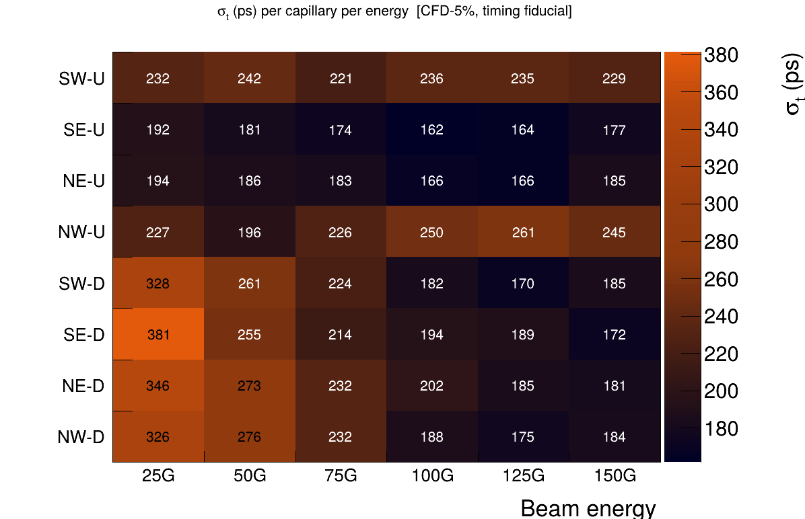
t (ps) for all 8 capillaries × 6 energies (a per-channel diagnostic — the production headline uses srCFD). Bright = worse timing; the worst cell is SE-D at 25 GeV, the best are the Up channels at 100–125 GeV." loading="lazy">Single-channel CFD-5% σt (ps) for all 8 capillaries × 6 energies (a per-channel diagnostic — the production headline uses srCFD). Bright = worse timing; the worst cell is SE-D at 25 GeV, the best are the Up channels at 100–125 GeV.
If every capillary followed the trend — the detector-potential projection
Two Up capillaries buck the single-channel trend (NW-U drifts up with energy, SW-U stays flat), and both are averaged into the headline (DW−UP)/2. A fair question: how much do they cost, and what would an all-uniform calorimeter time? We answer it two ways — an honest empirical test, and a clearly-labelled projection. Produced by idealUniform.C.
★ Key FindingThey are a modest handicap, not a liability — and the method is robust to them. First the counter-intuitive empirical fact: dropping the weak channels makes the headline worse, not better. Reconstructing (DW−UP)/2 from the raw waveforms at 150 GeV, the all-fiducial σt goes 67 ps with all four Up channels → 76 ps dropping NW-U → 101 ps dropping both — the 8-channel corner average benefits from every channel, even a mediocre one. So the weak channels should be kept. Second, the projection: if NW-U and SW-U instead followed the well-behaved Up trend, the headline would improve by ≈2 ps at 150 GeV (the exact projected values are annotated on the figure); the effect vanishes below ~75 GeV, where the two are no worse than the light-starved Down channels. This is an intrinsic-potential projection (the combination model is validated at high E: 69 vs 67 ps reconstructed at 150) — the measured 25.7 ps headline stands as the result.
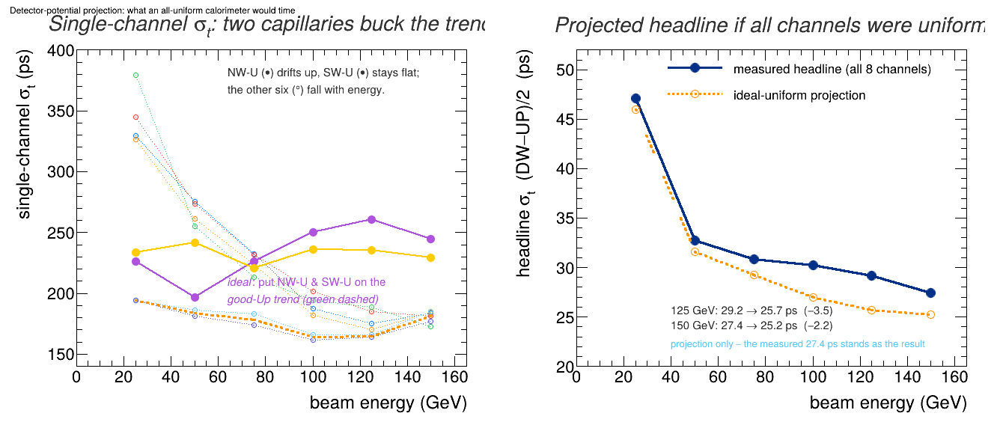
Left: the single-channel σt(E) per capillary — NW-U (filled) drifts up, SW-U (filled) stays flat, the other six (open) fall with energy; the green dashed line is the well-behaved Up trend the projection puts them on. Right: the measured headline (all 8 channels) versus the ideal-uniform projection — they coincide at low energy and separate above ~75 GeV, where the two laggards cost ~2–3.5 ps. Projection only; the measured 25.7 ps stands." loading="lazy">Left: the single-channel σt(E) per capillary — NW-U (filled) drifts up, SW-U (filled) stays flat, the other six (open) fall with energy; the green dashed line is the well-behaved Up trend the projection puts them on. Right: the measured headline (all 8 channels) versus the ideal-uniform projection — they coincide at low energy and separate above ~75 GeV, where the two laggards cost ~2–3.5 ps. Projection only; the measured 25.7 ps stands.
Full Layer 2 diagnostics -- MCP decomposition, per-channel & per-energy detail (click to expand)
MCP timing jitter characterisation
★ Key Findingσ(MCP1−MCP2)/√2 approx 73 ps (flat with energy). MCP1 and MCP2 are one MCP split into the two DT5742 groups (amplitude correlation = 1.000), so the MCP's own jitter cancels in the difference: this number is the inter-group (mezzanine) DRS4 timing jitter, not the MCP's intrinsic resolution. It is not the limiting factor: the (DW--UP)/2 estimator references each channel to its own group's MCP and cancels it in the corner difference, so our 25.7 ps headline needs no correction.
p.1
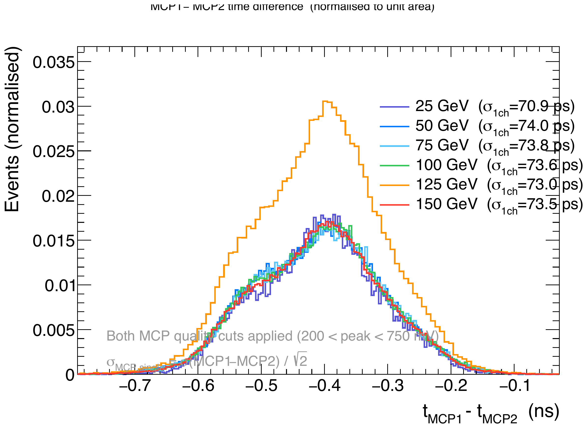
MCP1 -- MCP2 time-difference distributions at all 6 energies (normalised). MCP1 and MCP2 are one MCP split into the two DT5742 groups, so the MCP's own jitter cancels here: sigma(MCP1--MCP2)/sqrt(2) is the per-group reference jitter. Clean Gaussians, no tails.
p.2
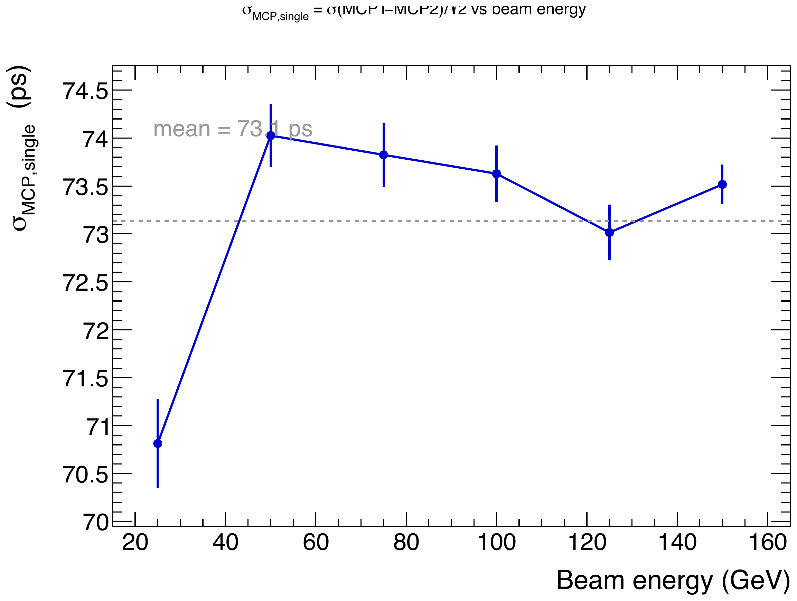
sigma(MCP1--MCP2)/sqrt(2) vs beam energy. Flat at approx 73 ps across all energies -- this is the inter-group (mezzanine) DRS4 timing jitter, a purely electronic property independent of shower physics or beam energy.
p.3
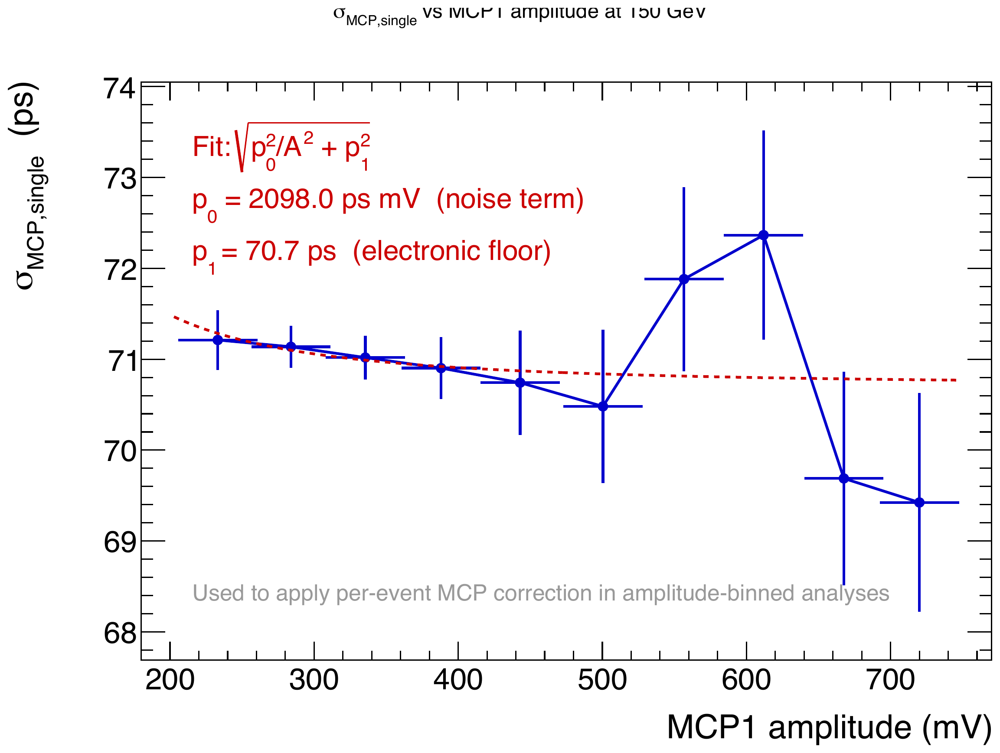
Per-channel sigma_t before (filled) and after (open) subtracting the per-group reference jitter. NB: valid only for estimators that MIX groups; a same-group single channel does not contain the inter-group term.
p.4
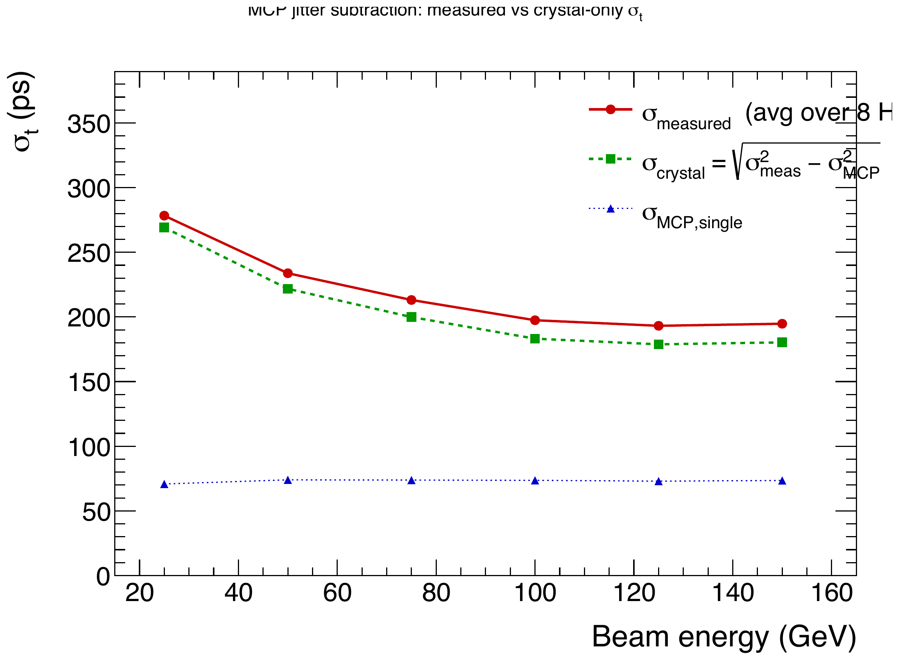
Summary table at each energy. The (DW--UP)/2 estimator references each channel to its own group's MCP and cancels it in the corner difference, so the 25.7 ps brightest-1000 headline needs no correction.
Per-channel CFD-5% sigma_t vs beam energy (8 colour-coded lines). SW-Up (olive) uses MCP2 as its reference -- all other channels use MCP1. NW-Up (orange) is consistently the weakest channel across all energies. At CFD-5% the Down capillaries no longer carry the CFD-20% shoulder, so Down and Up channels track together (except at 25 GeV, where genuine low-amplitude walk remains).
p.2
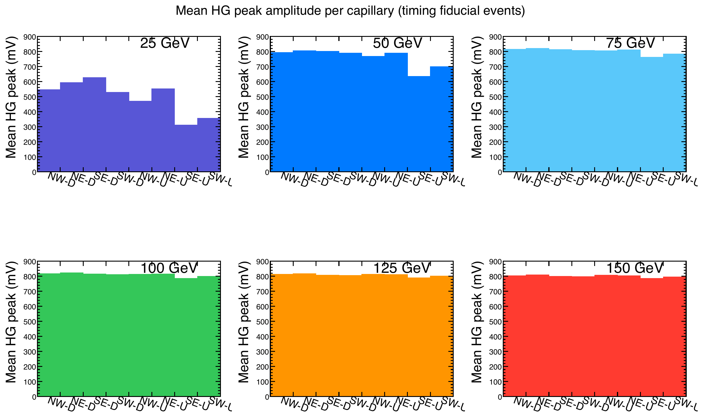
Mean HG peak amplitude per capillary at each beam energy (6 panels). Amplitude scales with energy for all channels. NW-Up shows systematically lower amplitude -- less light collection.
p.3
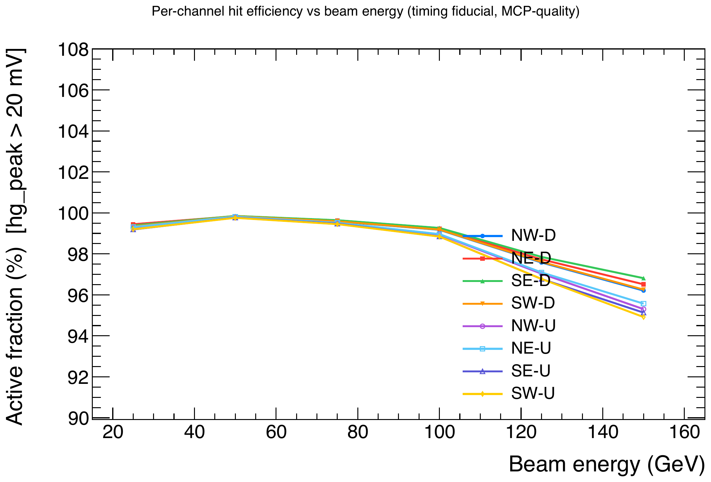
Per-channel hit efficiency (hg_peak > 20 mV threshold) vs energy. All channels are >90% efficient. Small drops at 25 GeV reflect the lower signal-to-noise ratio.
p.4
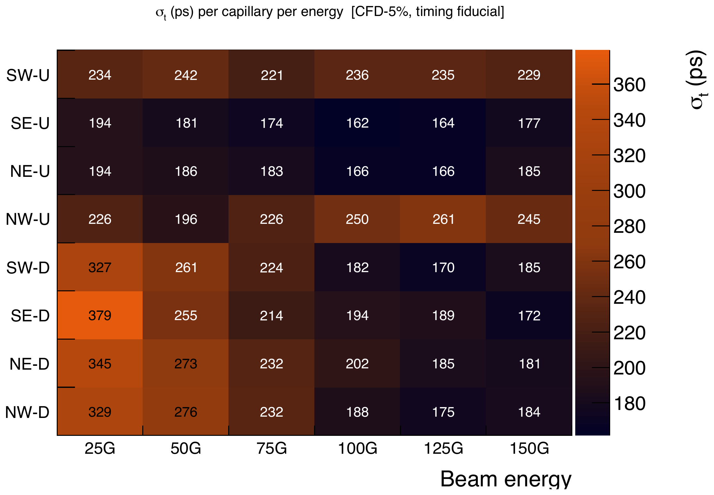
Heat map: sigma_t [ps] for all 8 channels x 6 energies. Cooler = better timing. NW-Up is the clear outlier (brightest row) across all energies.
Per-capillary timing resolution summary
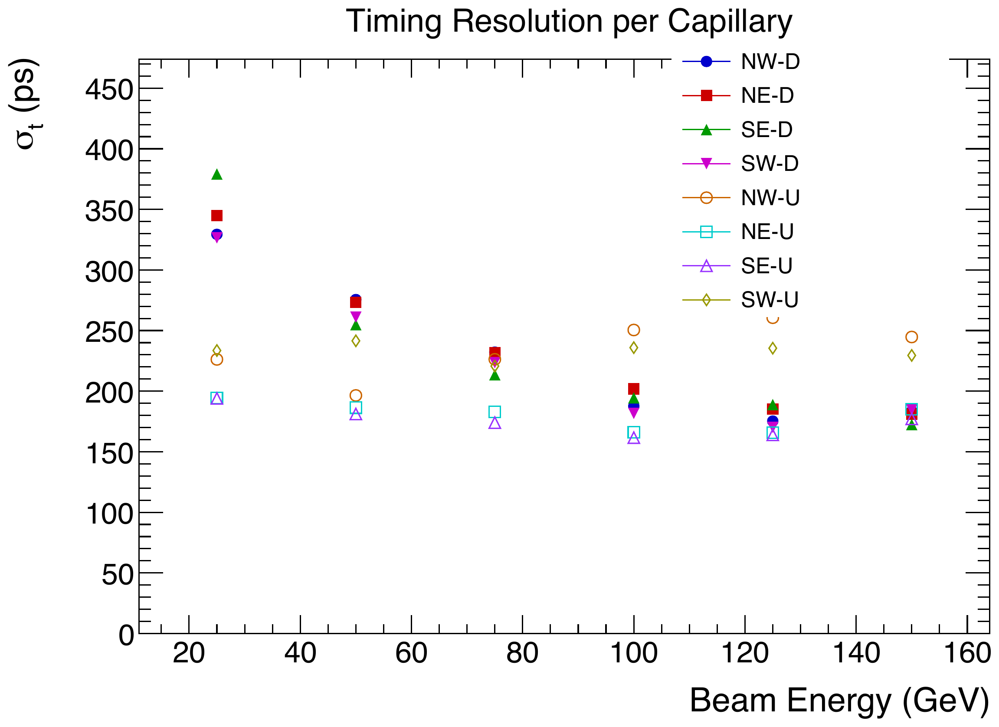
Per-capillary sigma_t summary (analyzeResolution.C), CFD-5%. Individual channel timing resolution vs beam energy. With CFD-5% the Down capillaries match the Up channels (≈180 ps at 150 GeV); the CFD-20% Down-channel shoulder is gone.
Per-energy capillary amplitude and timing maps
HG peak amplitude maps and per-channel timing distributions produced by the qualityPlots.C capillary_maps output for each run.
Status: COMPLETE -- beam quality and hadronic contamination documented. Good timing events require: (a) a valid wire-chamber track (wc_ok), (b) a beam position within the timing fiducial (per-energy optimised, r < 2.5–3.0 mm; see the fiducial-optimisation chapter), (c) a clean MCP reference pulse (200 < A_MCP < 750 mV), and (d) good EM shower containment (SumPbGlass < 30% x SumLG). This layer characterises the beam conditions, hadronic punch-through contamination, and validates the containment cut.
Beam & selection at a glance
A clean, well-aimed electron beam; the hadronic contamination is seen and removed; the showers are well contained. Expand the panel below for the full per-energy beam quality and containment detail.
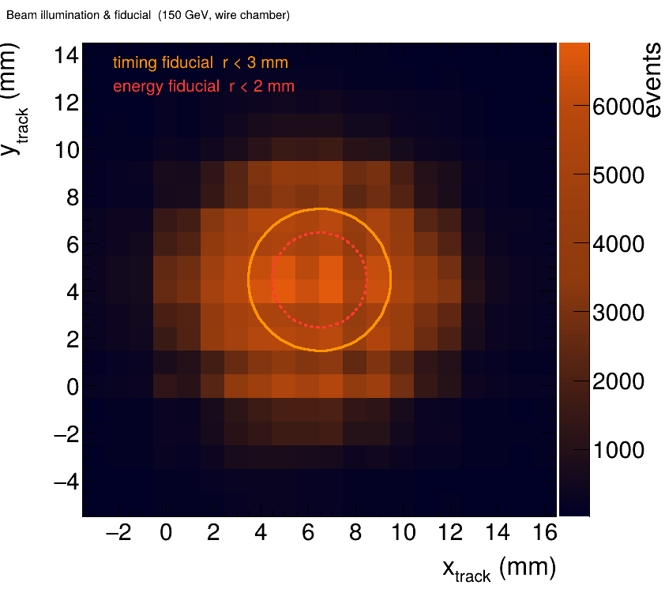
Wire-chamber beam illumination at 150 GeV. The electron beam is well-centred inside the timing (r<3 mm at 150 GeV) and energy (r<2 mm) fiducial circles (horizontal bands are the wire-chamber granularity). The timing radius is optimised per energy — see the fiducial-optimisation chapter below.
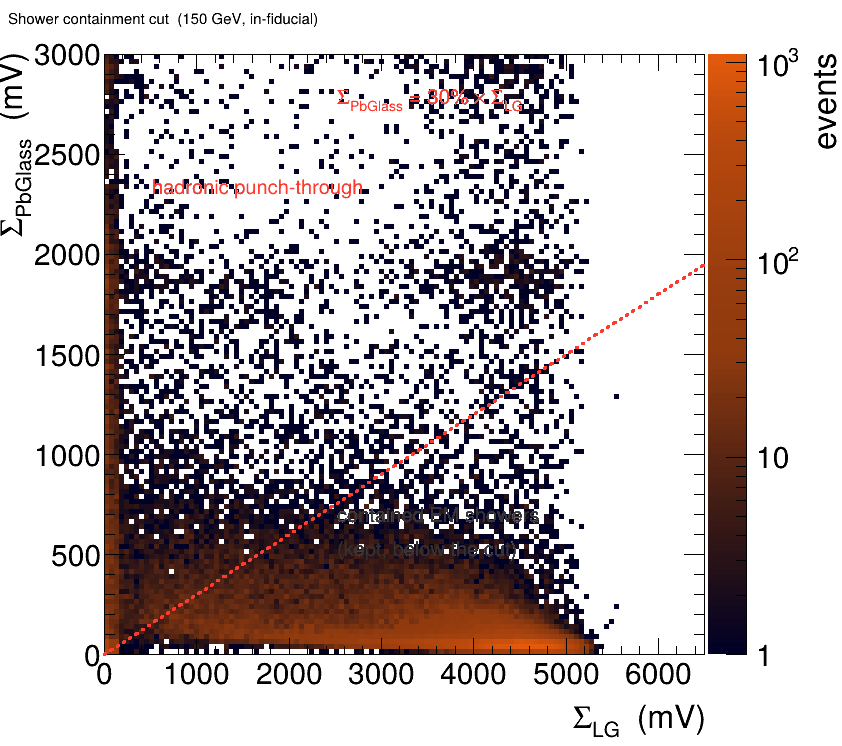
PbGlass vs ΣLG (150 GeV, in-fiducial). Contained EM showers form the dense band below the 30% containment cut; hadronic punch-through scatters above it and is removed by the cut." loading="lazy">ΣPbGlass vs ΣLG (150 GeV, in-fiducial). Contained EM showers form the dense band below the 30% containment cut; hadronic punch-through scatters above it and is removed by the cut.
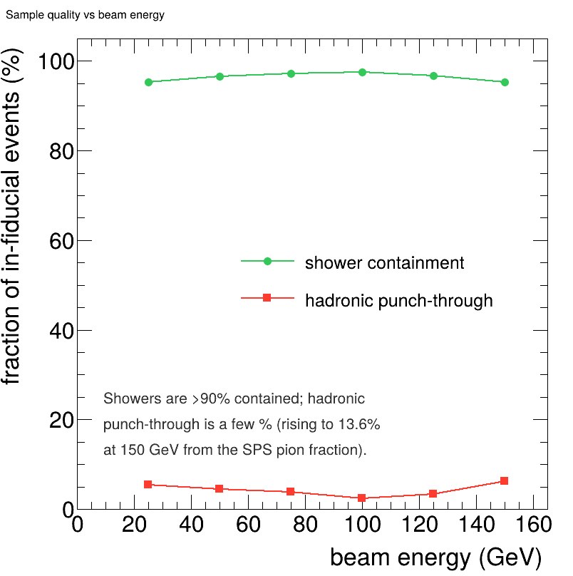
Sample quality vs energy: showers are 95–97% contained, and hadronic punch-through is only a few % (5.2% at 25 GeV) rising to 6.2% at 150 GeV from the SPS beam's pion fraction.
Optimising the timing fiducial — a per-energy, OOS-validated cut
The hero above draws the energy fiducial at r < 2 mm (tight, for shower containment). The timing fiducial we set by explicit optimisation rather than assumption. Reusing the headline’s exact Method-A formula, event cuts, data-derived centroid and Gaussian-core fit, we scan the corner σt versus fiducial radius at all six energies, two complementary ways: (1) the joint optimisation — the actual single-best-Emeas-bin estimator re-selected at each radius (literally what sets the headline; our replica reproduces the per-energy σt to <0.5 ps), and (2) a stable selection — a fixed top-2% / top-10% by ΣALG that freezes the Emeas cut so the pure radius/position effect reads off a smooth curve. Crucially, every candidate is checked with the run-folded out-of-sample (OOS) validation — because a tighter circle shrinks the selection pool, the single best bin can overfit, and only the OOS exposes it. Historical role: this scan (run with the earlier best-Emeas-bin estimator) is the study that set the adopted per-energy radii; the production brightest-1000 chain inherits exactly this ramp (2.5 mm for E ≤ 100 GeV, 3.0 mm for E ≥ 125 GeV) and, being deterministic, needs no per-event bin choice of its own. Generated by fiducialTimingScan.C.
★ Key FindingThe timing fiducial is optimised per energy: r < 2.5 mm for 25–100 GeV, r < 3.0 mm for 125–150 GeV — every choice OOS-validated (optimisation bias 0.0 ps). Two regimes emerge from the physics. At the lower energies the outer-ring position/time-walk degradation dominates, so tightening to 2.5 mm robustly improves the OOS resolution (50/75/100 GeV better by 1.7–3.6 ps; 25 GeV tied). At the higher energies the larger, higher-amplitude samples let the single-best-bin benefit from the looser pool: at 125 GeV the tighter cut overfits (in-sample better but OOS clearly worse), and at 150 GeV 3 mm is OOS-optimal — so both keep 3 mm. Net effect: the adopted radius ramp carries over unchanged into the production chain — the OOS machinery here guarded the radius choice, and the brightest-1000 selection that now sits on top of it is deterministic, so no bin choice remains to overfit. This is a genuine, OOS-guarded optimisation — not a per-energy argmin. The last two figures make that explicit: the best-bin curve is jumpy because the top Emeas bin flickers across the N ≥ 500 line (a selection artifact, not physics), and a naive radius×bin minimisation reaches “15 ps” in-sample that the held-out data exposes as +2 to +26 ps of overfitting. The fixed-radius, OOS-validated headline is the value that survives data it was not tuned on — which is the only kind a referee, or a real experiment, should believe.
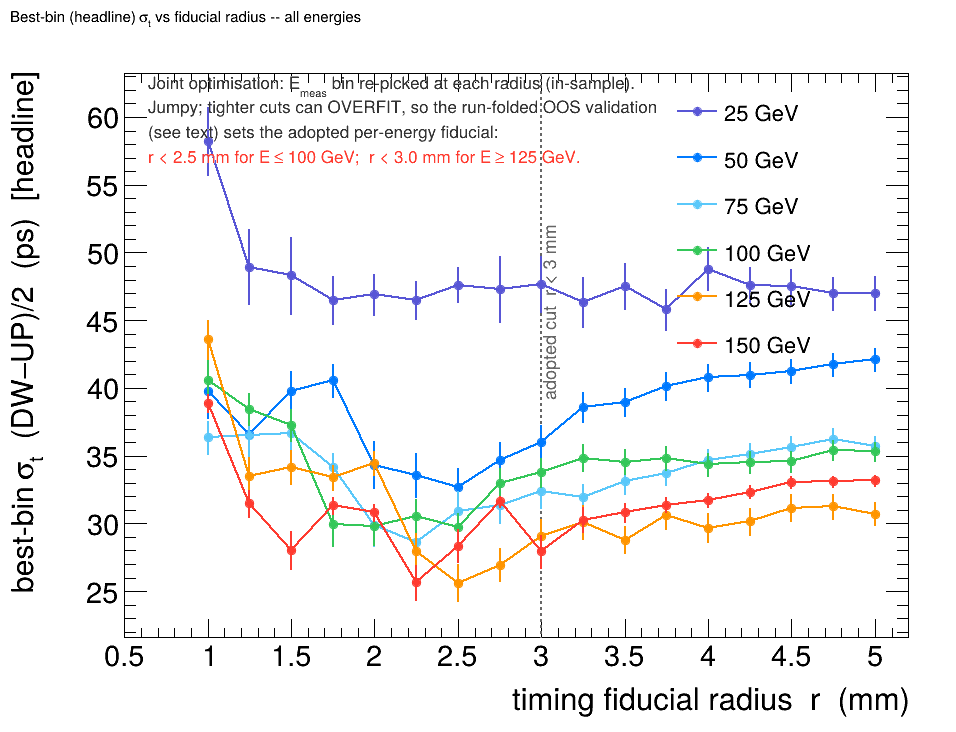
The joint view — best-bin (headline) σt vs fiducial radius, one curve per energy. In-sample (shown), tightening appears to help at most energies — but the run-folded OOS exposes an overfit at 125 GeV (in-sample 27.1 ps → OOS 33.1 ps). The OOS therefore sets the adopted per-energy cut: 2.5 mm for E ≤ 100 GeV, 3.0 mm for E ≥ 125 GeV." loading="lazy">The joint view — best-bin (headline) σt vs fiducial radius, one curve per energy. In-sample (shown), tightening appears to help at most energies — but the run-folded OOS exposes an overfit at 125 GeV (in-sample 27.1 ps → OOS 33.1 ps). The OOS therefore sets the adopted per-energy cut: 2.5 mm for E ≤ 100 GeV, 3.0 mm for E ≥ 125 GeV.
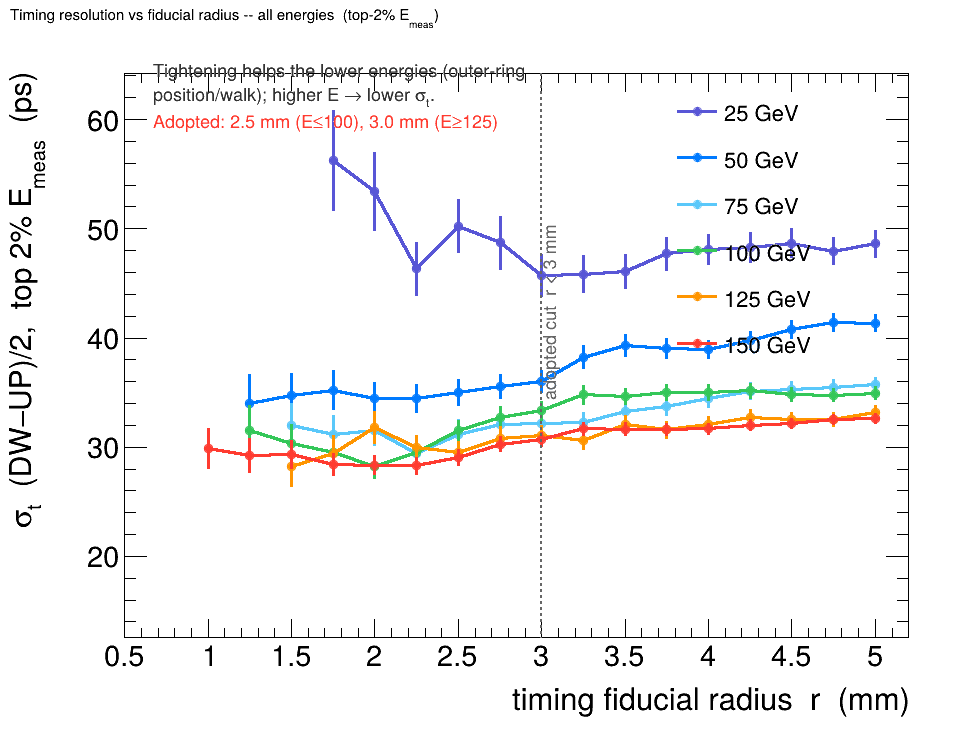
The stable view, all six energies — corner σt (fixed top-2% Emeas) vs radius. With the selection frozen the curves are smooth and show the pure position effect: tightening below ~2.5 mm helps the lower energies (the outer ring is lower-amplitude, higher-walk), while higher energy → lower σt overall." loading="lazy">The stable view, all six energies — corner σt (fixed top-2% Emeas) vs radius. With the selection frozen the curves are smooth and show the pure position effect: tightening below ~2.5 mm helps the lower energies (the outer ring is lower-amplitude, higher-walk), while higher energy → lower σt overall.
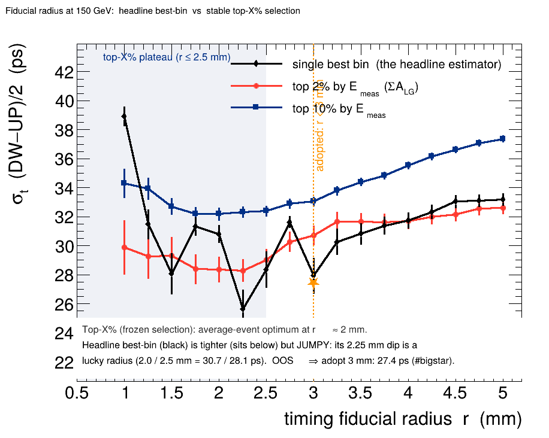
Headline-energy detail (150 GeV), with the actual single-best-bin estimator (black) overlaid on the stable top-2%/10% curves. The two selections optimise at different radii: the average-event (top-X%) bottoms at r ≈ 2 mm, but the headline best-bin is a tighter cut that sits below it. The best-bin is jumpy in radius (a single narrow bin), so its 2.25 mm dip is a lucky radius (its 2.0 and 2.5 mm neighbours sit 2–3 ps higher), not an optimum — we therefore compare sensible radii by their OOS values and adopt 3 mm (★), which beats the top-X% optimum outright." loading="lazy">Headline-energy detail (150 GeV), with the actual single-best-bin estimator (black) overlaid on the stable top-2%/10% curves. The two selections optimise at different radii: the average-event (top-X%) bottoms at r ≈ 2 mm, but the headline best-bin is a tighter cut that sits below it. The best-bin is jumpy in radius (a single narrow bin), so its 2.25 mm dip is a lucky radius (its 2.0 and 2.5 mm neighbours sit 2–3 ps higher), not an optimum — we therefore compare sensible radii by their OOS values and adopt 3 mm (★), which beats the top-X% optimum outright.
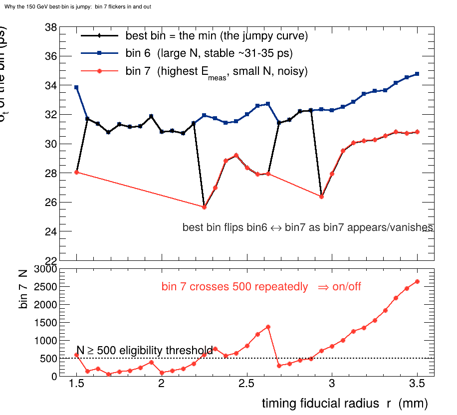
Why the best-bin curve is jumpy (150 GeV). The selected bin is min(bin 6, bin 7): bin 6 is large-N and stable (~31–35 ps), but bin 7 — the highest-Emeas bin — has only ~100–2600 events on the steeply-falling ΣALG tail, so (bottom) its count crosses the N ≥ 500 eligibility line repeatedly as the fiducial shifts the bin edges. Each crossing flips the best bin, producing 3–6 ps jumps. The jitter is a selection artifact, not physics." loading="lazy">Why the best-bin curve is jumpy (150 GeV). The selected bin is min(bin 6, bin 7): bin 6 is large-N and stable (~31–35 ps), but bin 7 — the highest-Emeas bin — has only ~100–2600 events on the steeply-falling ΣALG tail, so (bottom) its count crosses the N ≥ 500 eligibility line repeatedly as the fiducial shifts the bin edges. Each crossing flips the best bin, producing 3–6 ps jumps. The jitter is a selection artifact, not physics.
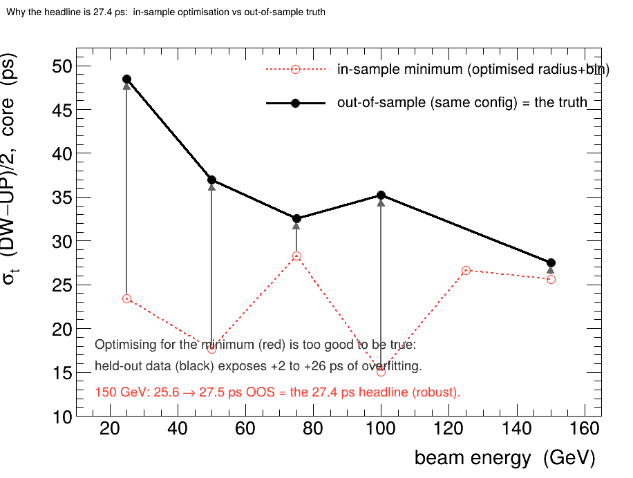
Why the headline is the OOS value, not the in-sample minimum. Searching radius×bins for the lowest σt (red) looks spectacular — down to 15 ps at 100 GeV — but re-measuring each exact config on held-out data (black, 5-fold run-folded OOS) exposes +2 to +26 ps of overfitting: those minima are the luckiest ~1000 events, not the resolution. The fixed-radius selection survives OOS (bias 0.0 ps); the argmin does not. (Curves shown for the best-bin-era estimator this scan was built on; the lesson — fix the selection before fitting — is what the deterministic brightest-1000 chain bakes in.)" loading="lazy">Why the headline is the OOS value, not the in-sample minimum. Searching radius×bins for the lowest σt (red) looks spectacular — down to 15 ps at 100 GeV — but re-measuring each exact config on held-out data (black, 5-fold run-folded OOS) exposes +2 to +26 ps of overfitting: those minima are the luckiest ~1000 events, not the resolution. The fixed-radius selection survives OOS (bias 0.0 ps); the argmin does not. (Curves shown for the best-bin-era estimator this scan was built on; the lesson — fix the selection before fitting — is what the deterministic brightest-1000 chain bakes in.)
Shashlik module centre from the calorimeter edges
Beam-independent module centre. The summed high-gain amplitude of the 8 RADiCAL capillaries (ΣHG) is projected onto x (tracks in a central y-band) and onto y (central x-band); each projection is a flat-topped plateau with sharp edges at the module boundary. The half-maximum crossings give the two edges, and the centre is their midpoint — independent of the beam profile within the module. The low-gain energy sum (ΣLG) gives the same centre as an independent cross-check. Generated by moduleCenter.C.
★ Key FindingModule centre = (6.58, 4.65) mm in WC coordinates (ΣHG of the 8 capillaries), footprint 15.5×15.5 mm (square, as expected). The ΣLG energy sum gives the same centre to <0.05 mm (6.61, 4.70 mm), so the result is robust to the choice of signal. The centre is energy-independent (stable to ±0.15 mm across 25–150 GeV — the module does not move with beam energy), confirming it as a geometric measurement rather than a beam centroid. This sets the nominal kCalo_x0/y0 (6.6, 4.7) and centres the transverse maps above.
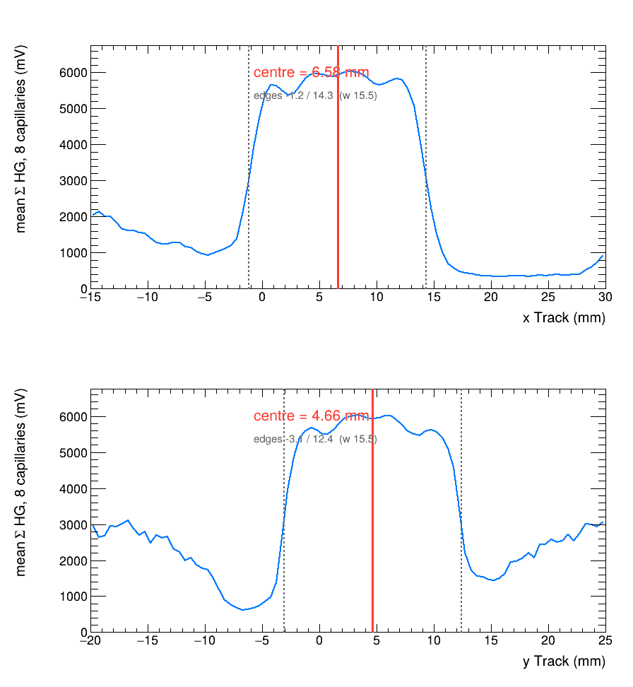
Top: ΣLG vs x; bottom: vs y. Dashed = half-max edges, red = centre (their midpoint). Off-module structure at large |y| (Pb-glass / leakage backsplash) is ignored by scanning outward from the plateau.
Data-driven survey of where each detector sits in the wire-chamber track frame. Each centre uses the method matched to its response: RADiCAL from the ΣHG edges, the MCP from the FWHM midpoint of its acceptance blob, the beam from the track centroid. The Pb-glass is shown for context only — it sits behind/beside the RADiCAL and responds to leakage (a low square at the RADiCAL footprint plus an asymmetric high lobe), so it has no clean geometric centre and none is claimed. Generated by alignmentAnalysis.C.
★ Key FindingThe MCP is co-aligned with the RADiCAL to 0.78 mm (MCP centre (6.05, 4.08) mm vs RADiCAL (6.58, 4.65) mm) — sub-millimetre, i.e. the timing reference sits squarely on the module. The beam was steered 2.46 mm off the module centre (centroid (8.92, 3.88) mm, toward +x/−y). Both offsets are small compared with the ~14–16 mm module footprint, so the beam stayed well within the fiducial throughout.
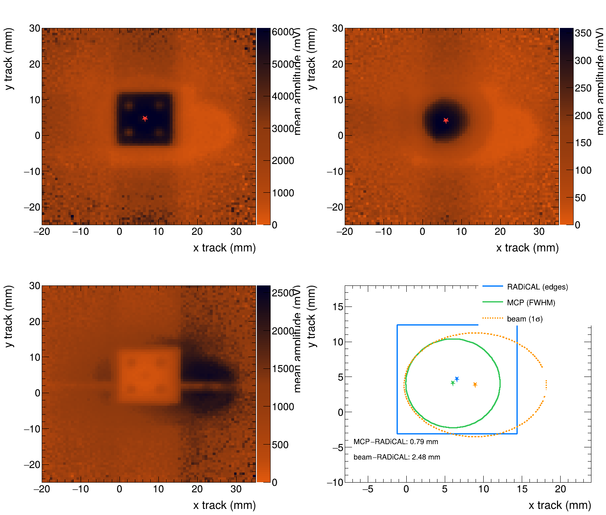
Response maps for RADiCAL (ΣHG), MCP, and Pb-glass (context), plus a schematic overlaying the RADiCAL footprint (blue square), MCP FWHM (green), and beam 1σ (orange) with their centres.
Wire-chamber spatial resolution & track binning
Data-driven resolution of the delay-line beam chamber, measured without a second tracker. Position is x = (7/36 mm/ns)·(tR−tL); the hit position lives in the difference of the two end-times, so the sum tR+tL is position-independent and its spread isolates the timing noise that limits the position (σx = 7/36 · σ(sum)). Reads raw waveforms (highest-energy run); generated by wireChamberResolution.C.
★ Key Findingσx ≈ 3.7 mm, σy ≈ 3.6 mm (peak-time, as x_trk/y_trk are built; ≈3.3 mm with sub-sample CFD-50%). Energy-independent (the sum method is position-blind). Beam spot for context: σx≈7.6 mm, σy≈5.2 mm. The ~mm resolution is set by peak-timing on a slow digitiser, not the wire pitch. Track-binning guidance: the position quantises in ~0.25 mm steps (one sample), so hit-map / beam-profile plots are fine at 1–2 mm; but for position-dependent analysis use bins ≥ the resolution (≈3.5–4 mm) — finer bins are correlated by the smearing, not independent measurements.
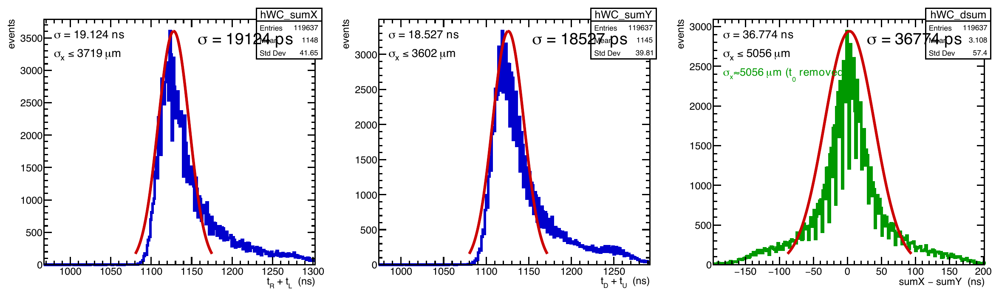
R+tL (x), tD+tU (y), and their difference. Sharp core + heavy tail/secondary lobe = occasional delay-line mis-reconstruction on the slow (~1.3 ns/sample) digitiser." loading="lazy">End-time sums tR+tL (x), tD+tU (y), and their difference. Sharp core + heavy tail/secondary lobe = occasional delay-line mis-reconstruction on the slow (~1.3 ns/sample) digitiser.
Per-channel transverse maps & the MCP-connector check
Mean pulse amplitude vs beam-track impact point for each of the 8 capillaries plus the 1×1-cm trigger, shown before (good track only) and after the 1×1 trigger (ch15 > 60 mV). Binned at 0.25 mm in x and 0.5 mm in y (finest-but-no-finer: xtrk is continuous, ytrk has a peak-sample comb below ~0.5 mm), inverted-kRust palette (signal dark on white). Generated by transverseMaps.C (150 GeV shown; all energies in Output/Summary).
★ Key FindingThe rings are pre-showering in the connector metal, not absorption — harmless to the calorimeter, so no connector veto is applied. Controlling for beam intensity (same radius from the beam centre, connector vs no-connector), the connectors enhance the 1×1 signal ~2.4× (SMA 391 vs 160 mV control; BNC barrel 407 vs 204 mV) — the opposite of absorption. A connector barrel is ~one radiation length of brass/steel in the beam: it starts the EM shower early (one e− → many e+e− + γ), and that multiplied swarm sprays into the small downstream 1×1 trigger. The ring shape is the coaxial geometry: the solid outer barrel (annulus) is the most material → brightest rim, while the thin central pin / dielectric showers less → a dip in the middle. Crucially, a shower conserves energy — pre-starting it a few cm upstream does not destroy energy, so the deep calorimeter still integrates the full shower. Consistent with this: the BNC region (~(7,5) mm, on the beam core) carries normal calorimeter energy (5402 vs 5549 mV) and a test veto there worsens the 150 GeV timing (by ~3 ps in the best-bin-era check) by discarding the highest-Emeas, best-contained showers — the very events the brightest-1000 selection keeps; the SMA (~(20,3) mm) lies outside the active square (⟨Σcap⟩ 1196 vs ~5500 mV) so the fiducial cut already removes it. The 1×1 trigger is retained only as a clean-beam (no-pedestal) selection — it removes the ~24% no-hit population, not the connectors.
p.1
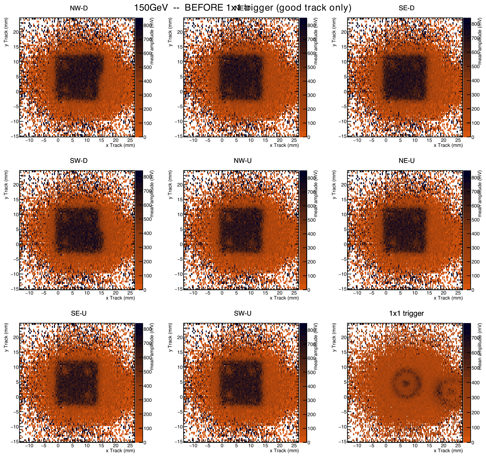
Page 1 — Top: all channels before the trigger. Bottom: after. The 1×1 trigger removes the ~24% no-hit pedestal. The MCP BNC ring (~(7,5) mm) and SMA ring (~(20,3) mm) are visible in the 1×1 cell.
p.2
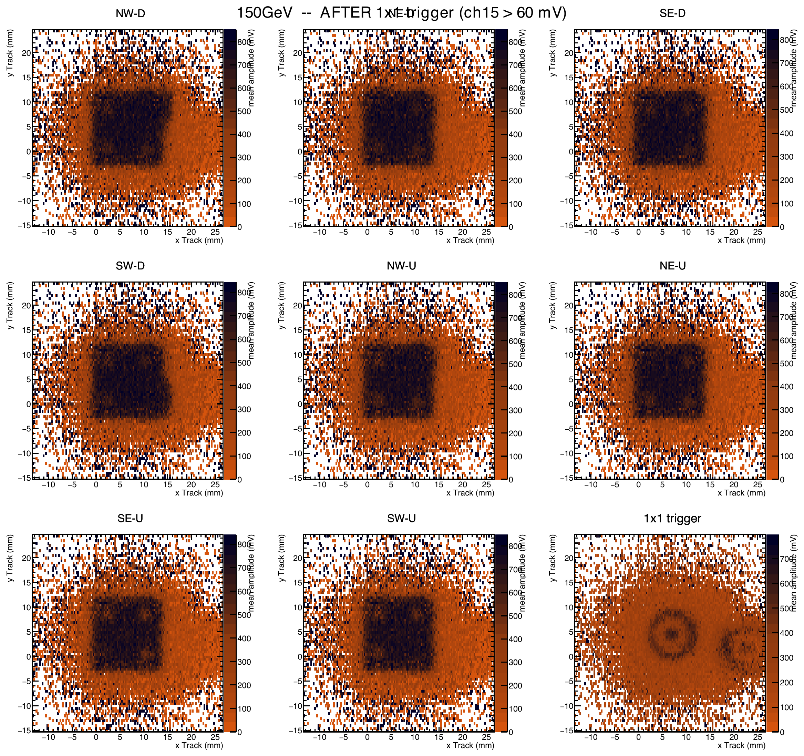
Page 2 — Top: all channels before the trigger. Bottom: after. The 1×1 trigger removes the ~24% no-hit pedestal. The MCP BNC ring (~(7,5) mm) and SMA ring (~(20,3) mm) are visible in the 1×1 cell.
Full Layer 3 diagnostics -- beam quality, population classification & per-energy containment (click to expand)
Cross-energy beam quality overview
★ Key FindingBeam centroid is stable to +/-1 mm across all six energies. SumLG peak position scales linearly with beam energy (approx 55 mV/GeV), confirming consistent detector response. At 150 GeV, approx 8% of events saturate the MCP1 DRS4 input; these are rejected by the 750 mV amplitude cut.
p.1
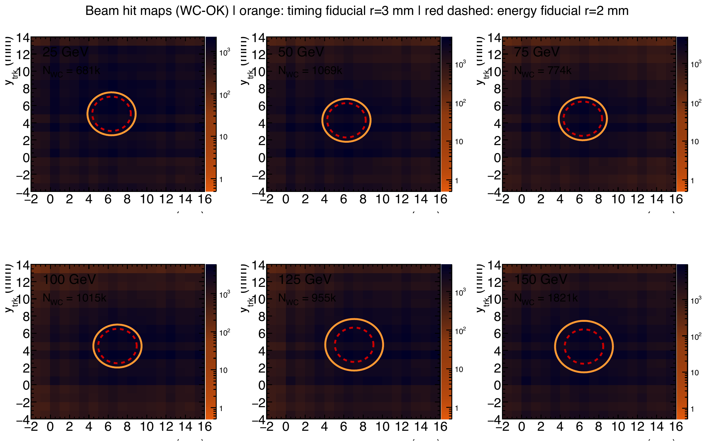
WC hit maps at all 6 energies. Orange circle = timing fiducial (r = 3 mm); red dashed = energy fiducial (r = 2 mm). Beam centroid is consistent across energies.
p.2
MCP1 amplitude distributions (normalised to unit area). Gray dashed = lower quality cut (200 mV); orange dashed = DRS4 saturation cut (750 mV). Saturation fraction grows with energy.
p.3
SumLG signal distributions (normalised) for timing-fiducial events. Peaks scale linearly with beam energy -- confirms good calorimeter response and energy linearity.
p.4
Fiducial efficiency vs radius cut. Fraction of MCP-quality events passing r < r_cut. Orange dashed = timing fiducial (3 mm); red dashed = energy fiducial (2 mm).
Events are classified into four exclusive populations based on SumLG, SumPbGlass, and beam radius. The 30% containment cut separates Population A (good EM) from Population B (hadronic punch-through).
★ Key FindingAt 150 GeV, 6.2% of in-fiducial events with a RADiCAL signal are hadronic punch-through (Pop. B). At 25 GeV this is only ~5.2%, consistent with the SPS beam's energy-dependent pion contamination. The 30% containment cut is working correctly; energy-dependent tightening could reduce hadronic contamination at 150 GeV with modest efficiency loss.
p.1
SumPbGlass vs SumLG scatter coloured by population. Green = Pop. A (good EM shower, passes 30% cut). Red = Pop. B (hadronic punch-through / edge shower). Orange = Pop. C (beam halo -- beam missed the module). Gray = Pop. D (off-axis, outside 3 mm fiducial). Dashed line = 30% containment cut.
p.2
Beam hit maps for populations A, B, C at 25 GeV (top) and 150 GeV (bottom). Hadronic events (red) occupy the same fiducial region as EM events (green) -- the contamination is from pion beam composition, not geometry.
p.3
Timing distributions for Pop. A (green) vs Pop. B (red) at each beam energy, normalised to unit area. Hadronic events produce a broad non-Gaussian tail that degrades the combined timing resolution.
p.4
sigma_t for Pop. A / Pop. B / combined (A+B) vs beam energy. Pop. B sigma_t is shown but note: hadronic timing is non-Gaussian; the Gaussian-core sigma_t is not physically meaningful for Pop. B. Pop. A (our signal) achieves <150 ps before combining channels.
p.5
Containment ratio (SumPbGlass/SumLG) distributions for A vs B. The 30% cut threshold (dashed) cleanly separates the two peaks.
p.6
SumLG spectra for Pop. A (green) vs Pop. B (red), normalised. Hadronic events have a slightly lower mean SumLG -- the shower energy is partially carried by neutral particles that the LG fibres do not see.
Cross-energy containment summary
p.1
SumPbGlass/SumLG ratio distributions overlaid (normalised). The hadronic tail grows at low energy due to higher pion contamination in the SPS beam at lower momenta.
p.2
SumPbGlass vs SumLG scatter (6-panel, log-z colour scale) at each energy. Two populations are visible: a near-horizontal band (contained EM, large SumLG, small SumPbGlass) and a near-vertical band (beam halo events that missed RADiCAL).
p.3
Contained fraction vs beam radius r at each energy. Shower containment drops near the module edge (r to 3 mm) as edge showers have more leakage. Higher energy = more leakage at all radii.
p.4
Headline containment efficiency vs beam energy (timing-fiducial events only). 95.3% at 150 GeV, rising to 95--97% at lower energies.
Layer 4 -- Calibration
Status: COMPLETE -- walk corrections applied and cross-validated. The raw DRS4 waveform time is extracted at a programmable point on the leading edge; the production estimator is srCFD (the 5% edge, recovered from the LG channel when the HG pulse clips) for the high-light builds and LED for the dim builds. This layer shows the evidence behind that choice: CFD-fraction scans, walk corrections, and the containment-cut optimisation.
Calibration at a glance
The calibration and combination steps turn a ~180 ps single channel into the 25.7 ps production headline. Expand the panel below for the full per-energy method, CFD-fraction, walk-correction and cut-optimisation detail.
The resolution ladder vs energy: best single channel (≈180 ps) → A²-weighted 8-channel combination (≈62 ps) → the brightest-1000 (DW−UP)/2 headline (25.7 ps). Channel combination alone buys ≈3×; the corner difference and the brightest-1000 selection do the rest.fraction itself (next panel) — the production estimator times the 5% edge (srCFD), which removes the Down-capillary shoulder that no amplitude walk fit can (verified out-of-sample)." loading="lazy">Single-channel timing: an explicit walk correction (CFD + HG/LG-ratio) adds a modest further improvement on the cleaner channels. But the dominant per-channel lever is the CFD fraction itself (next panel) — the production estimator times the 5% edge (srCFD), which removes the Down-capillary shoulder that no amplitude walk fit can (verified out-of-sample).
CFD-fraction optimisation (the timing “shoulder”)
Why the production estimator times at the 5% edge. The single most important per-channel timing lever is where on the rising edge the time is taken, not the walk correction. Group timing resolution (the four Down vs the four Up capillaries) is shown as a function of CFD fraction at all six energies. Estimator: each capillary is shifted to its own median MCP-referenced Δt (fiducial events, hg_peak > 20 mV) and the four are pooled; σt is the RMS within ±1.0 ns of the pooled median; error bars are statistical (σ/√2N, smaller than the markers).
★ Key FindingThe Down-capillary timing “shoulder” is a CFD-fraction / leading-edge effect, not a DRS4 satellite, not a selection artefact, and not correctable by an amplitude walk fit (verified in elbowInvestigation.C / walkCorrTest.C). The 5% edge — the common near-minimum across energies, and exactly where the production srCFD estimator times — removes it with no loss of events.
Down capillaries. For E ≥ 50 GeV σt rises monotonically with CFD fraction: the Down-capillary leading-edge shape jitters more pulse-to-pulse the higher the threshold (next figure) — the “shoulder” seen per-channel in the appendix. Timing low on the edge removes it — CFD-5% (dashed) is at or near the minimum. The 25 GeV curve inverts because at the lowest amplitude the 3% level dips toward noise." loading="lazy">Down capillaries. For E ≥ 50 GeV σt rises monotonically with CFD fraction: the Down-capillary leading-edge shape jitters more pulse-to-pulse the higher the threshold (next figure) — the “shoulder” seen per-channel in the appendix. Timing low on the edge removes it — CFD-5% (dashed) is at or near the minimum. The 25 GeV curve inverts because at the lowest amplitude the 3% level dips toward noise.Up capillaries. A much weaker fraction dependence and a lower σt overall — the cleaner pulse shape has no comparable slow region at 20%. The common near-minimum around 5–10% across both groups, together with the 25 GeV low-fraction noise penalty, is why the 5% edge (not 3%, not 20%) is the operating point. The production (DW−UP)/2 headline times this edge via srCFD and is insensitive to this choice in any case." loading="lazy">Up capillaries. A much weaker fraction dependence and a lower σt overall — the cleaner pulse shape has no comparable slow region at 20%. The common near-minimum around 5–10% across both groups, together with the 25 GeV low-fraction noise penalty, is why the 5% edge (not 3%, not 20%) is the operating point. The production (DW−UP)/2 headline times this edge via srCFD and is insensitive to this choice in any case.
The mechanism: leading-edge shape jitter
Why the fraction matters — the cause, not just the consequence. The naive explanation (“20% sits on a slow part of the edge”) is wrong: the mean rising edge is actually steeper at 20% than at 5% (left), so electronic noise (σt ≈ σV/(dV/dt)) would make 20% better. The real cause is pulse-to-pulse shape variation (right).
★ Key FindingThe Down-capillary shoulder is leading-edge shape jitter that grows with threshold height — not the mean slope (which is steeper at 20%), not noise, not amplitude walk. Timing low on the edge (the 5% point — srCFD's operating point) samples the most reproducible part of the pulse. This is the cause behind the CFD-fraction trend above (generated by edgeMechanism.C).
Mean rising edge of a Down (SE-D) vs an Up (SE-U) capillary at 100 GeV, aligned at the 20% crossing. The 20% level sits on a steep part of the edge — and the Down edge is steeper there than the Up edge (0.50 vs 0.36 /ns). So the Down shoulder is not a mean-slope / noise effect; that would predict the opposite ordering." loading="lazy">Mean rising edge of a Down (SE-D) vs an Up (SE-U) capillary at 100 GeV, aligned at the 20% crossing. The 20% level sits on a steep part of the edge — and the Down edge is steeper there than the Up edge (0.50 vs 0.36 /ns). So the Down shoulder is not a mean-slope / noise effect; that would predict the opposite ordering.The mechanism. The pulse-to-pulse leading-edge shape jitter σ(tf−t5%) (the MCP reference cancels — this is purely intra-pulse) rises the higher the threshold and is systematically larger for the Down capillaries. So the shape is least reproducible high on the edge: CFD-5% times where the edge is most stable. The trend is energy-independent (50–150 GeV) — an intrinsic pulse-shape property, not shower physics." loading="lazy">The mechanism. The pulse-to-pulse leading-edge shape jitter σ(tf−t5%) (the MCP reference cancels — this is purely intra-pulse) rises the higher the threshold and is systematically larger for the Down capillaries. So the shape is least reproducible high on the edge: CFD-5% times where the edge is most stable. The trend is energy-independent (50–150 GeV) — an intrinsic pulse-shape property, not shower physics.
Full Layer 4 diagnostics -- per-energy methods, CFD-fraction & walk-correction scans, containment-cut optimisation (click to expand)
Per-energy timing methods (CFD + walk corrections)
Generated by timingMethods.C. Each PDF has three pages: (1) the CFD fractions (10–50%) and LED overlaid per channel; (2) the walk corrections vs the CFD-20% baseline; (3) the per-channel “elbow” diagnostic — CFD-20% (shouldered) vs CFD-5% (adopted), median-aligned. Page 3 shows directly that the broad, skewed timing peak on the four Down capillaries is a leading-edge SHAPE effect (the edge jitters more pulse-to-pulse high on the edge), removed by timing low on the edge at CFD-5% — not a DRS4 sampling satellite, not a selection effect, and not correctable by an amplitude walk fit (verified in elbowInvestigation.C / walkCorrTest.C). The Up capillaries are already optimal and serve as the control. The production (DW−UP)/2 headline times the same low edge via srCFD, so it never carried this shoulder.
p.1
25 GeV -- CFD fractions + LED (p1), walk corrections (p2), and the CFD-20% vs CFD-5% elbow diagnostic (p3)." loading="lazy">Page 1 — 25 GeV -- CFD fractions + LED (p1), walk corrections (p2), and the CFD-20% vs CFD-5% elbow diagnostic (p3).
p.2
25 GeV -- CFD fractions + LED (p1), walk corrections (p2), and the CFD-20% vs CFD-5% elbow diagnostic (p3)." loading="lazy">Page 2 — 25 GeV -- CFD fractions + LED (p1), walk corrections (p2), and the CFD-20% vs CFD-5% elbow diagnostic (p3).
p.3
25 GeV -- CFD fractions + LED (p1), walk corrections (p2), and the CFD-20% vs CFD-5% elbow diagnostic (p3)." loading="lazy">Page 3 — 25 GeV -- CFD fractions + LED (p1), walk corrections (p2), and the CFD-20% vs CFD-5% elbow diagnostic (p3).
p.1
50 GeV -- CFD fractions + LED (p1), walk corrections (p2), and the CFD-20% vs CFD-5% elbow diagnostic (p3)." loading="lazy">Page 1 — 50 GeV -- CFD fractions + LED (p1), walk corrections (p2), and the CFD-20% vs CFD-5% elbow diagnostic (p3).
p.2
50 GeV -- CFD fractions + LED (p1), walk corrections (p2), and the CFD-20% vs CFD-5% elbow diagnostic (p3)." loading="lazy">Page 2 — 50 GeV -- CFD fractions + LED (p1), walk corrections (p2), and the CFD-20% vs CFD-5% elbow diagnostic (p3).
p.3
50 GeV -- CFD fractions + LED (p1), walk corrections (p2), and the CFD-20% vs CFD-5% elbow diagnostic (p3)." loading="lazy">Page 3 — 50 GeV -- CFD fractions + LED (p1), walk corrections (p2), and the CFD-20% vs CFD-5% elbow diagnostic (p3).
p.1
75 GeV -- CFD fractions + LED (p1), walk corrections (p2), and the CFD-20% vs CFD-5% elbow diagnostic (p3)." loading="lazy">Page 1 — 75 GeV -- CFD fractions + LED (p1), walk corrections (p2), and the CFD-20% vs CFD-5% elbow diagnostic (p3).
p.2
75 GeV -- CFD fractions + LED (p1), walk corrections (p2), and the CFD-20% vs CFD-5% elbow diagnostic (p3)." loading="lazy">Page 2 — 75 GeV -- CFD fractions + LED (p1), walk corrections (p2), and the CFD-20% vs CFD-5% elbow diagnostic (p3).
p.3
75 GeV -- CFD fractions + LED (p1), walk corrections (p2), and the CFD-20% vs CFD-5% elbow diagnostic (p3)." loading="lazy">Page 3 — 75 GeV -- CFD fractions + LED (p1), walk corrections (p2), and the CFD-20% vs CFD-5% elbow diagnostic (p3).
p.1
100 GeV -- CFD fractions + LED (p1), walk corrections (p2), and the CFD-20% vs CFD-5% elbow diagnostic (p3)." loading="lazy">Page 1 — 100 GeV -- CFD fractions + LED (p1), walk corrections (p2), and the CFD-20% vs CFD-5% elbow diagnostic (p3).
p.2
100 GeV -- CFD fractions + LED (p1), walk corrections (p2), and the CFD-20% vs CFD-5% elbow diagnostic (p3)." loading="lazy">Page 2 — 100 GeV -- CFD fractions + LED (p1), walk corrections (p2), and the CFD-20% vs CFD-5% elbow diagnostic (p3).
p.3
100 GeV -- CFD fractions + LED (p1), walk corrections (p2), and the CFD-20% vs CFD-5% elbow diagnostic (p3)." loading="lazy">Page 3 — 100 GeV -- CFD fractions + LED (p1), walk corrections (p2), and the CFD-20% vs CFD-5% elbow diagnostic (p3).
p.1
125 GeV -- CFD fractions + LED (p1), walk corrections (p2), and the CFD-20% vs CFD-5% elbow diagnostic (p3)." loading="lazy">Page 1 — 125 GeV -- CFD fractions + LED (p1), walk corrections (p2), and the CFD-20% vs CFD-5% elbow diagnostic (p3).
p.2
125 GeV -- CFD fractions + LED (p1), walk corrections (p2), and the CFD-20% vs CFD-5% elbow diagnostic (p3)." loading="lazy">Page 2 — 125 GeV -- CFD fractions + LED (p1), walk corrections (p2), and the CFD-20% vs CFD-5% elbow diagnostic (p3).
p.3
125 GeV -- CFD fractions + LED (p1), walk corrections (p2), and the CFD-20% vs CFD-5% elbow diagnostic (p3)." loading="lazy">Page 3 — 125 GeV -- CFD fractions + LED (p1), walk corrections (p2), and the CFD-20% vs CFD-5% elbow diagnostic (p3).
p.1
150 GeV -- CFD fractions + LED (p1), walk corrections (p2), and the CFD-20% vs CFD-5% elbow diagnostic (p3)." loading="lazy">Page 1 — 150 GeV -- CFD fractions + LED (p1), walk corrections (p2), and the CFD-20% vs CFD-5% elbow diagnostic (p3).
p.2
150 GeV -- CFD fractions + LED (p1), walk corrections (p2), and the CFD-20% vs CFD-5% elbow diagnostic (p3)." loading="lazy">Page 2 — 150 GeV -- CFD fractions + LED (p1), walk corrections (p2), and the CFD-20% vs CFD-5% elbow diagnostic (p3).
p.3
150 GeV -- CFD fractions + LED (p1), walk corrections (p2), and the CFD-20% vs CFD-5% elbow diagnostic (p3)." loading="lazy">Page 3 — 150 GeV -- CFD fractions + LED (p1), walk corrections (p2), and the CFD-20% vs CFD-5% elbow diagnostic (p3).
Containment threshold optimisation scan
Seven thresholds (10%--50%) scanned at all six energies (A2-weighted combo diagnostic; per-page values on the figures).
★ Key FindingThe 30% baseline is near-optimal at most energies. Tightening to 20% at 150 GeV improves sigma_t by ~3--5 ps at the cost of ~10% fewer events. A future analysis could use energy-dependent thresholds as a hardware-free route to further improvement.
p.1
A2-weighted combo sigma_t vs beam energy for all 7 containment thresholds. Red = tight (10%), violet = loose (50%). Tighter cuts improve sigma_t at high energies where hadronic contamination is largest.
p.2
sigma_t vs threshold at each beam energy. The knee indicates the optimal threshold where purity gain flattens. The optimal threshold is energy-dependent: ~20% at 150 GeV, ~40% at 25 GeV.
p.3
Surviving fraction vs threshold. Each 10% tightening costs ~5--15% of timing-valid events at 150 GeV (higher hadronic fraction -- bigger efficiency cost).
p.4
Timing distributions at 150 GeV for tight (15%), baseline (30%), and loose (50%) cuts. Tighter cut visibly sharpens the peak and reduces the non-Gaussian tail.
Cross-energy timing methods overview
p.1
Channel-combination method sigma_t vs energy: best single channel, 4-corner average, mean of all 8, A2-weighted mean of all 8, A2-weighted 4-corner. A2-weighting consistently beats unweighted combinations.
p.2
CFD fraction scan (10/20/30/50%): best-channel sigma_t vs energy. CFD-20% is near-optimal within this coarse scan; CFD-10% degrades due to noise sensitivity near the baseline, CFD-50% degrades at high energy due to amplitude walk. A finer scan (down to 3-5%) favours a lower fraction still -- the headline estimator adopts CFD-5%.
p.3
Walk correction benefit: baseline CFD-20% vs LED+TOT, CFD+1/A, and CFD+HG/LG ratio corrections. The HG/LG ratio correction (M7) gives the largest improvement at high energy where shower depth fluctuations are largest.
p.4
sigma_t vs 1/sqrt(E) -- the headline stochastic scaling plot. Straight line fit: sigma_t = a/sqrt(E) + b. This analysis: a approx 220 ps*sqrt(GeV), b approx 33 ps. Published (arXiv:2401.01747): a = 256 ps*sqrt(GeV), b = 17.5 ps.
Page 1 — Combination timing resolution (timingResolution.C) -- compares best-single-channel, 4-corner (DW+UP)/2, mean-all-8, and A2-weighted combination with stochastic fits.
p.2
Page 2 — Combination timing resolution (timingResolution.C) -- compares best-single-channel, 4-corner (DW+UP)/2, mean-all-8, and A2-weighted combination with stochastic fits.
All-methods summary table
★ Key FindingCFD-20% is optimal among the coarse 10--50% set scanned here; a finer scan favours CFD-5%, which the headline estimator adopts. The HG/LG ratio walk correction (M7) reduces sigma_t by 5--15 ps at 150 GeV compared to uncorrected CFD-20%. A2-weighted channel combination outperforms unweighted averaging by 20--40 ps at all energies.
Best-channel sigma_t (ps) for all 8 timing methods at each beam energy (timingMethods.C) -- graphical and tabular summary.
Layer 5 -- Physics Extraction
Status: COMPLETE -- energy and timing resolution extracted with full systematics. The production timing chain combines four elements: (1) the (DW--UP)/2 half-difference, MCP-jitter-free by construction; (2) the deterministic brightest-1000 selection -- the 1000 largest-ΣLG fiducial events at each energy, fixed before any fit; (3) the per-regime edge estimator -- srCFD (the 5% leading edge, recovered from the LG channel when the HG pulse clips) for the high-light builds, LED for the dim builds; (4) a robust Gaussian-core width with an in-event DW/UP consistency veto. The resulting sigma_t is the timing resolution of each build's full light chain -- LYSO:Ce and W are common to every build; the WLS capillary is the variable.
Energy colour key:25 GeV50 GeV75 GeV100 GeV125 GeV150 GeV
Physics results at a glance
The headline timing and energy resolutions, and a check that the timing result is spatially uniform. Expand the panel below for the full energy-binned fits, the 255-subset channel-combination scan, and the per-energy distributions.
Headline: the brightest-1000 (DW−UP)/2 estimator (srCFD) reaches 25.7 ± 0.6 ps at 150 GeV (45 ps at 25), fit σt = 203/√E ⊕ 18.8 ps; across the full timing fiducial the same chain gives ≈50 ps at 150 GeV. The published curve (256/√E ⊕ 17.5, arXiv:2401.01747) is overlaid for context; our floor (18.8 ± 0.8 ps) confirms its 17.5 ps constant term. The selection holds 0.7–3.4% of fiducial events and is deterministic (no trained bin choice). MCP-free by construction (it cancels each channel's per-group reference in the corner difference). Two under-performing Up capillaries (NW-U, SW-U) cap this slightly (≈2 ps at 150 GeV) — see the detector-potential projection in Layer 2 (they are kept, not dropped: dropping them worsens the headline)." loading="lazy">Headline: the brightest-1000 (DW−UP)/2 estimator (srCFD) reaches 25.7 ± 0.6 ps at 150 GeV (45 ps at 25), fit σt = 203/√E ⊕ 18.8 ps; across the full timing fiducial the same chain gives ≈50 ps at 150 GeV. The published curve (256/√E ⊕ 17.5, arXiv:2401.01747) is overlaid for context; our floor (18.8 ± 0.8 ps) confirms its 17.5 ps constant term. The selection holds 0.7–3.4% of fiducial events and is deterministic (no trained bin choice). MCP-free by construction (it cancels each channel's per-group reference in the corner difference). Two under-performing Up capillaries (NW-U, SW-U) cap this slightly (≈2 ps at 150 GeV) — see the detector-potential projection in Layer 2 (they are kept, not dropped: dropping them worsens the headline).E/E = 13.9% at 150 GeV. The large constant term is expected: the 14 mm prototype is a short, leakage-dominated test module, not a full-depth calorimeter." loading="lazy">Energy resolution σE/E = 13.9% at 150 GeV. The large constant term is expected: the 14 mm prototype is a short, leakage-dominated test module, not a full-depth calorimeter.
t mapped across the beam spot at 150 GeV: stable (≈90 ps) across the core fiducial, with mild degradation toward the edges from residual position-dependent walk — the timing result is robust to beam position." loading="lazy">A²-weighted combination σt mapped across the beam spot at 150 GeV: stable (≈90 ps) across the core fiducial, with mild degradation toward the edges from residual position-dependent walk — the timing result is robust to beam position.
The timing floor: 18.8 ± 0.8 ps — confirming the published 17.5 ps
The constant term b of the production σt(E) fit is 18.8 ± 0.8 ps — statistically consistent with, and therefore confirming, the 17.5 ps floor published in arXiv:2401.01747 (NIM A 1068 (2024) 169737) on the same detector and beam. The floor is σt as E → ∞ — an extrapolation beyond the highest measured point (150 GeV) — and its plausible physical origin is longitudinal shower-depth fluctuation: timing shifts by -33.6 ± 2.9 ps per e-fold of collected light (the depth dial). Generated by timingFloorComparison.C.
★ Key FindingThe production floor 18.8 ± 0.8 ps CONFIRMS the published 17.5 ps — it does not revise it. Both numbers are extrapolations beyond the 150 GeV data edge (our lowest measured point is 25.7 ps), fit on the same detector and beam, and they agree within uncertainties. The floor has a physical candidate: longitudinal shower-depth fluctuation moves the effective light-collection point along the WLS capillary, shifting the corner time by -33.6 ± 2.9 ps per e-fold of collected light — a geometry effect common to every build, not a DAQ or electronics artefact.
The production curve (brightest-1000, srCFD) with its fit and floor band (18.8 ± 0.8 ps), the published 256/√E ⊕ 17.5 parametrisation overlaid, and the E > 150 GeV region shaded as extrapolation (no beam reached it). Where data exist the curves agree; the floors are statistically consistent.
Is the quoted σ clean — what's in the tails?
We quote the Gaussian-core σ (the standard fast-timing convention), so a fair question is what lives in the non-Gaussian tail. For a bright-event regime of the same order as the production selection (150 GeV, r < 3 mm, top-2% by Emeas) we classify every event as core or tail (|t − μ| > 2.5σ) and test the three usual culprits — low amplitude (time-walk), too few valid channels, or a single rogue channel (CFD mis-reconstruction). Generated by timingTailAnalysis.C.
★ Key FindingThe core σ is clean. The distribution is a Gaussian core plus a modest non-Gaussian shoulder — ~2.6% of events beyond 2.5σ (a pure Gaussian gives 1.2%), which raises the trimmed RMS to ~33 ps versus the ~31 ps core, a ~2 ps effect. Those tail events have the same Emeas as the core (median 5128 vs 5119 mV) and the same worst single-channel deviation (225 vs 231 ps), so the tail is not time-walk and not a rogue channel — it is the intrinsic non-Gaussian shape of the per-channel CFD times, mildly enhanced by the few events missing a channel (95% vs 100% full-8). A negligible 0.13% sits beyond 250 ps — rare catastrophic mis-reconstruction a real experiment removes with a one-line quality cut. So the quoted Gaussian-core σ is the right, well-behaved figure of merit.
not low-amplitude and not single-channel mis-reco." loading="lazy">(DW−UP)/2 with its Gaussian-core fit (top-left), and core-vs-tail comparisons of amplitude (top-right) and worst single-channel deviation (bottom-left). The tail events overlay the core in both — they are not low-amplitude and not single-channel mis-reco.
See the two techniques live
The headline rests on two ideas. Don't take them on faith — move the sliders
(or open the full field guide ▸):
① Why CFD, not a fixed threshold
● a fixed-threshold time walks with amplitude;
● CFD (5% of the peak) stays locked — the production srCFD
estimator times exactly this low edge, recovering it from the LG channel when the HG pulse clips.
② Why (DW−UP)/2 beats the reference jitter
Crank the MCP jitter: the single channel balloons while the
(DW−UP)/2 estimator doesn't move — the reference cancels.
Full Layer 5 detail -- energy-binned fits, 255-subset combination scan, per-energy distributions & the reference-jitter reminder (click to expand)
Energy-binned sigma_t vs beam energy
★ Key FindingProduction result: 25.7 ± 0.6 ps at 150 GeV using the brightest-1000 (DW−UP)/2 srCFD estimator; 45 ps at 25 GeV; ≈50 ps (50.5 ps) across the full timing fiducial. The deterministic selection holds 0.7% of fiducial events at 150 GeV (3.4% at 25 GeV). Fit: a = 203 ± 6 ps·√GeV, floor b = 18.8 ± 0.8 ps — consistent with, and confirming, the published 17.5 ps constant term (arXiv:2401.01747).
p.1
Page 1 — Production sigma_t summary (timingProduction.C). Page 1: the DSB1 headline curve with its full-fiducial companion and the published reference; page 2: all four builds; page 3: srCFD vs plain CFD-5% (the method gain). Fit: sigma_t = a/sqrt(E) ⊕ b.
p.2
Page 2 — Production sigma_t summary (timingProduction.C). Page 1: the DSB1 headline curve with its full-fiducial companion and the published reference; page 2: all four builds; page 3: srCFD vs plain CFD-5% (the method gain). Fit: sigma_t = a/sqrt(E) ⊕ b.
p.3
Page 3 — Production sigma_t summary (timingProduction.C). Page 1: the DSB1 headline curve with its full-fiducial companion and the published reference; page 2: all four builds; page 3: srCFD vs plain CFD-5% (the method gain). Fit: sigma_t = a/sqrt(E) ⊕ b.
Spatial uniformity: sigma_t vs beam position
sigma_t mapped as a function of (x, y) beam impact position within the timing fiducial. Produced by uniformityScan.C.
p.1
Page 1 — Spatial uniformity: sigma_t vs beam position (x,y)
p.2
Page 2 — Spatial uniformity: sigma_t vs beam position (x,y)
p.3
Page 3 — Spatial uniformity: sigma_t vs beam position (x,y)
Per-energy timing resolution (all channels)
Per-channel and combination timing resolution summary (analyzeResolution.C) across all six beam energies.
Brute-force channel combination scan -- all 255 subsets
All 2^8 - 1 = 255 non-empty subsets of the 8 channels evaluated at each beam energy using the A2-weighted combination.
★ Key FindingThe best 7-channel combination at 150 GeV -- all channels except NW-Up -- achieves 54.1 ps vs 60.6 ps for all 8. The ~7 ps improvement from dropping NW-Up suggests a hardware issue (noisy electronics or reduced light yield) that should be investigated. SW-Up (which uses MCP2) is beneficial to keep: excluding it worsens timing to 65.0 ps. This brute-force scan runs on the plain CFD-5% basis (a diagnostic basis — the production headline times the same edge via srCFD): its all-8 result (60.6 ps) agrees with the independent A²-weighted 8-channel combo (60 ps, with the stop-cell correction) — the two diagnostics reconcile to <1 ps.
p.1
Best A2-weighted sigma_t vs energy for each subset size N = 1 to 8. The largest gain is from N=1 to N=4 channels; adding channels 5--8 gives diminishing returns. Best N=4 at 150 GeV: 57.6 ps vs best N=7: 54.1 ps.
p.2
sigma_t scatter at 150 GeV for all 255 subsets, coloured by N. Filled circles include SW-Up (the only group-1 capillary); open circles exclude it. SW-Up is beneficial to keep: its inclusion improves most combos.
p.3
Impact of SW-Up (ch7, the only group-1 channel): all-8 vs 7ch-no-SW-Up vs best-7-any vs energy. Removing SW-Up worsens sigma_t at 150 GeV (61 to 65 ps): the extra independent channel outweighs the small inter-group jitter it adds.
p.4
Single-channel sigma_t vs energy. NW-Up (orange) stands out as the weakest channel at all energies. Downstream channels (NW/NE/SE/SW-D) sample the shower max and achieve the best individual timing.
Brightest-1000 timing distributions per energy
Each page shows the brightest-1000 (DW--UP)/2 timing distributions at one beam energy (timingProduction.C). The robust Gaussian-core sigma from these distributions is what enters the summary.
p.1
25 GeV: brightest-1000 (DW−UP)/2 timing distributions with robust Gaussian-core fits -- the production sigma_t at this energy." loading="lazy">Page 1 — 25 GeV: brightest-1000 (DW−UP)/2 timing distributions with robust Gaussian-core fits -- the production sigma_t at this energy.
p.2
25 GeV: brightest-1000 (DW−UP)/2 timing distributions with robust Gaussian-core fits -- the production sigma_t at this energy." loading="lazy">Page 2 — 25 GeV: brightest-1000 (DW−UP)/2 timing distributions with robust Gaussian-core fits -- the production sigma_t at this energy.
p.1
50 GeV: brightest-1000 (DW−UP)/2 timing distributions with robust Gaussian-core fits -- the production sigma_t at this energy." loading="lazy">Page 1 — 50 GeV: brightest-1000 (DW−UP)/2 timing distributions with robust Gaussian-core fits -- the production sigma_t at this energy.
p.2
50 GeV: brightest-1000 (DW−UP)/2 timing distributions with robust Gaussian-core fits -- the production sigma_t at this energy." loading="lazy">Page 2 — 50 GeV: brightest-1000 (DW−UP)/2 timing distributions with robust Gaussian-core fits -- the production sigma_t at this energy.
p.1
75 GeV: brightest-1000 (DW−UP)/2 timing distributions with robust Gaussian-core fits -- the production sigma_t at this energy." loading="lazy">Page 1 — 75 GeV: brightest-1000 (DW−UP)/2 timing distributions with robust Gaussian-core fits -- the production sigma_t at this energy.
p.2
75 GeV: brightest-1000 (DW−UP)/2 timing distributions with robust Gaussian-core fits -- the production sigma_t at this energy." loading="lazy">Page 2 — 75 GeV: brightest-1000 (DW−UP)/2 timing distributions with robust Gaussian-core fits -- the production sigma_t at this energy.
p.1
100 GeV: brightest-1000 (DW−UP)/2 timing distributions with robust Gaussian-core fits -- the production sigma_t at this energy." loading="lazy">Page 1 — 100 GeV: brightest-1000 (DW−UP)/2 timing distributions with robust Gaussian-core fits -- the production sigma_t at this energy.
p.2
100 GeV: brightest-1000 (DW−UP)/2 timing distributions with robust Gaussian-core fits -- the production sigma_t at this energy." loading="lazy">Page 2 — 100 GeV: brightest-1000 (DW−UP)/2 timing distributions with robust Gaussian-core fits -- the production sigma_t at this energy.
p.1
125 GeV: brightest-1000 (DW−UP)/2 timing distributions with robust Gaussian-core fits -- the production sigma_t at this energy." loading="lazy">Page 1 — 125 GeV: brightest-1000 (DW−UP)/2 timing distributions with robust Gaussian-core fits -- the production sigma_t at this energy.
p.2
125 GeV: brightest-1000 (DW−UP)/2 timing distributions with robust Gaussian-core fits -- the production sigma_t at this energy." loading="lazy">Page 2 — 125 GeV: brightest-1000 (DW−UP)/2 timing distributions with robust Gaussian-core fits -- the production sigma_t at this energy.
p.1
150 GeV: brightest-1000 (DW−UP)/2 timing distributions with robust Gaussian-core fits -- the production sigma_t at this energy." loading="lazy">Page 1 — 150 GeV: brightest-1000 (DW−UP)/2 timing distributions with robust Gaussian-core fits -- the production sigma_t at this energy.
p.2
150 GeV: brightest-1000 (DW−UP)/2 timing distributions with robust Gaussian-core fits -- the production sigma_t at this energy." loading="lazy">Page 2 — 150 GeV: brightest-1000 (DW−UP)/2 timing distributions with robust Gaussian-core fits -- the production sigma_t at this energy.
Reference jitter (reminder)
Per-group reference jitter σ(MCP1−MCP2)/√2 approx 73 ps (flat vs energy; one MCP split to both DT5742 groups, so this is the inter-group jitter -- the MCP's own jitter cancels). Cancels in (DW--UP)/2 -- the 25.7--45 ps results need no correction.
sigma(MCP1--MCP2)/sqrt(2) vs energy -- flat: inter-group (mezzanine) DRS4 jitter, not the MCP's own.
p.3
Per-channel sigma_t before/after subtracting the per-group jitter (group-mixing estimators only).
p.4
Summary table at each energy.
p.5
Page 5 — MCP jitter summary (see Layer 2 for full discussion). Shown here for reference alongside the headline result.
p.6
Page 6 — MCP jitter summary (see Layer 2 for full discussion). Shown here for reference alongside the headline result.
Layer 6 -- Systematic Uncertainties
Status: COMPLETE -- cut variation uncertainties evaluated. Two budgets live here. (1) The production headline carries a dedicated selection systematic from K/r/veto variations of the brightest-1000 chain: ±1.0 ps for DSB1 (±1.9 / 0.9 / 1.1 ps for LUAG / MIXED / TENERGY; committed gate log). (2) The cut-variation budget below is evaluated on the A²-weighted combination -- the estimator most sensitive to the selection cuts (fiducial radius, MCP amplitude window, containment threshold, CFD fraction) -- as a conservative cross-check; the total is the quadrature sum.
Systematics at a glance
The systematic budget is evaluated on the A²-weighted combination — the estimator most sensitive to the selection cuts. Expand the panel below for the full per-energy budget and the cross-energy quality summary.
2.7 ps — every cut variation (fiducial radius, MCP window, containment, HG threshold) contributes only a few ps. Crucially, the MCP-window term does not apply to the MCP-free (DW−UP)/2 headline — so the headline systematic is smaller still." loading="lazy">Systematic budget at 150 GeV (on the A²-weighted combo): total 2.7 ps — every cut variation (fiducial radius, MCP window, containment, HG threshold) contributes only a few ps. Crucially, the MCP-window term does not apply to the MCP-free (DW−UP)/2 headline — so the headline systematic is smaller still.t vs energy with its stat ⊕ systematic band: a few ps at every energy. The core σ is a robust truncated-RMS (truncation-bias corrected), which is stable at low statistics — the former Gaussian-fit instability that produced spurious ≈40 ps bands at 25/125 GeV (three cut variations shifting in lock-step) is gone. The production (DW−UP)/2 headline times the 5% edge via srCFD and its brightest-1000 selection is deterministic — its dedicated selection systematic is ±1.0 ps (DSB1)." loading="lazy">A²-combo σt vs energy with its stat ⊕ systematic band: a few ps at every energy. The core σ is a robust truncated-RMS (truncation-bias corrected), which is stable at low statistics — the former Gaussian-fit instability that produced spurious ≈40 ps bands at 25/125 GeV (three cut variations shifting in lock-step) is gone. The production (DW−UP)/2 headline times the 5% edge via srCFD and its brightest-1000 selection is deterministic — its dedicated selection systematic is ±1.0 ps (DSB1).
Full Layer 6 detail -- per-energy systematic budget & cross-energy quality summary (click to expand)
Systematic uncertainty budget
Cut variations and total uncertainty budget produced by systematicUncertainties.C (evaluated on the A^2-weighted combination).
★ Key FindingTotal systematic on the A²-weighted combination at 150 GeV is 2.7 ps -- the quadrature sum of the cut variations (fiducial radius, MCP window, containment, HG threshold), each only a few ps. The core σ is a truncation-bias-corrected robust RMS (not a Gaussian fit), so the nominal is stable at low statistics — the former Gaussian-fit instability that produced spurious ≈40 ps systematic bands at 25 and 125 GeV (three cut variations shifting ≈−39 ps in lock-step) is gone, and the systematic is now a few ps at every energy. The MCP-free (DW−UP)/2 headline does not carry the MCP-window term, so its systematic is smaller still.
p.1
Page 1 — Systematic uncertainties: cut variations and total uncertainty budget
p.2
Page 2 — Systematic uncertainties: cut variations and total uncertainty budget
p.3
Page 3 — Systematic uncertainties: cut variations and total uncertainty budget
Cross-energy quality summary
p.1
Page 1 — Cross-energy beam quality summary (qualityPlots.C) -- centroid stability, MCP distributions, and cut efficiencies across all six energies.
p.2
Page 2 — Cross-energy beam quality summary (qualityPlots.C) -- centroid stability, MCP distributions, and cut efficiencies across all six energies.
Appendix -- Per-Energy Detail
Full per-energy plots for all six runs: combined timing distributions, per-channel timing distributions, energy spectra, and timing methods comparison. The full quality reports (10 pages each) are listed at the bottom of this section.
25 GeV -- per-channel CFD-5% timing distributions (relative to MCP)." loading="lazy">25 GeV -- per-channel CFD-5% timing distributions (relative to MCP).25 GeV -- SumLG energy distribution with Gaussian fit (timing-fiducial events)." loading="lazy">25 GeV -- SumLG energy distribution with Gaussian fit (timing-fiducial events).
p.1
25 GeV -- all 8 timing methods on a single plot for direct comparison." loading="lazy">Page 1 — 25 GeV -- all 8 timing methods on a single plot for direct comparison.
p.2
25 GeV -- all 8 timing methods on a single plot for direct comparison." loading="lazy">Page 2 — 25 GeV -- all 8 timing methods on a single plot for direct comparison.
p.3
25 GeV -- all 8 timing methods on a single plot for direct comparison." loading="lazy">Page 3 — 25 GeV -- all 8 timing methods on a single plot for direct comparison.
50 GeV -- per-channel CFD-5% timing distributions (relative to MCP)." loading="lazy">50 GeV -- per-channel CFD-5% timing distributions (relative to MCP).50 GeV -- SumLG energy distribution with Gaussian fit (timing-fiducial events)." loading="lazy">50 GeV -- SumLG energy distribution with Gaussian fit (timing-fiducial events).
p.1
50 GeV -- all 8 timing methods on a single plot for direct comparison." loading="lazy">Page 1 — 50 GeV -- all 8 timing methods on a single plot for direct comparison.
p.2
50 GeV -- all 8 timing methods on a single plot for direct comparison." loading="lazy">Page 2 — 50 GeV -- all 8 timing methods on a single plot for direct comparison.
p.3
50 GeV -- all 8 timing methods on a single plot for direct comparison." loading="lazy">Page 3 — 50 GeV -- all 8 timing methods on a single plot for direct comparison.
75 GeV -- per-channel CFD-5% timing distributions (relative to MCP)." loading="lazy">75 GeV -- per-channel CFD-5% timing distributions (relative to MCP).75 GeV -- SumLG energy distribution with Gaussian fit (timing-fiducial events)." loading="lazy">75 GeV -- SumLG energy distribution with Gaussian fit (timing-fiducial events).
p.1
75 GeV -- all 8 timing methods on a single plot for direct comparison." loading="lazy">Page 1 — 75 GeV -- all 8 timing methods on a single plot for direct comparison.
p.2
75 GeV -- all 8 timing methods on a single plot for direct comparison." loading="lazy">Page 2 — 75 GeV -- all 8 timing methods on a single plot for direct comparison.
p.3
75 GeV -- all 8 timing methods on a single plot for direct comparison." loading="lazy">Page 3 — 75 GeV -- all 8 timing methods on a single plot for direct comparison.
100 GeV -- per-channel CFD-5% timing distributions (relative to MCP)." loading="lazy">100 GeV -- per-channel CFD-5% timing distributions (relative to MCP).100 GeV -- SumLG energy distribution with Gaussian fit (timing-fiducial events)." loading="lazy">100 GeV -- SumLG energy distribution with Gaussian fit (timing-fiducial events).
p.1
100 GeV -- all 8 timing methods on a single plot for direct comparison." loading="lazy">Page 1 — 100 GeV -- all 8 timing methods on a single plot for direct comparison.
p.2
100 GeV -- all 8 timing methods on a single plot for direct comparison." loading="lazy">Page 2 — 100 GeV -- all 8 timing methods on a single plot for direct comparison.
p.3
100 GeV -- all 8 timing methods on a single plot for direct comparison." loading="lazy">Page 3 — 100 GeV -- all 8 timing methods on a single plot for direct comparison.
125 GeV -- per-channel CFD-5% timing distributions (relative to MCP)." loading="lazy">125 GeV -- per-channel CFD-5% timing distributions (relative to MCP).125 GeV -- SumLG energy distribution with Gaussian fit (timing-fiducial events)." loading="lazy">125 GeV -- SumLG energy distribution with Gaussian fit (timing-fiducial events).
p.1
125 GeV -- all 8 timing methods on a single plot for direct comparison." loading="lazy">Page 1 — 125 GeV -- all 8 timing methods on a single plot for direct comparison.
p.2
125 GeV -- all 8 timing methods on a single plot for direct comparison." loading="lazy">Page 2 — 125 GeV -- all 8 timing methods on a single plot for direct comparison.
p.3
125 GeV -- all 8 timing methods on a single plot for direct comparison." loading="lazy">Page 3 — 125 GeV -- all 8 timing methods on a single plot for direct comparison.
150 GeV -- per-channel CFD-5% timing distributions (relative to MCP)." loading="lazy">150 GeV -- per-channel CFD-5% timing distributions (relative to MCP).150 GeV -- SumLG energy distribution with Gaussian fit (timing-fiducial events)." loading="lazy">150 GeV -- SumLG energy distribution with Gaussian fit (timing-fiducial events).
p.1
150 GeV -- all 8 timing methods on a single plot for direct comparison." loading="lazy">Page 1 — 150 GeV -- all 8 timing methods on a single plot for direct comparison.
p.2
150 GeV -- all 8 timing methods on a single plot for direct comparison." loading="lazy">Page 2 — 150 GeV -- all 8 timing methods on a single plot for direct comparison.
p.3
150 GeV -- all 8 timing methods on a single plot for direct comparison." loading="lazy">Page 3 — 150 GeV -- all 8 timing methods on a single plot for direct comparison.
Full quality reports (10 pages each)
Generated by qualityPlots.C. Includes beam hit map, MCP amplitudes, HG/LG channel amplitudes, time-walk diagnostics, TOT & LED, cut optimisation scans, fiducial overview, and PbGlass containment.